| ComCat M7.1 (ci38457511), ShakeMap Surfaces, Log10(k)=-2.52, p=1.21, c=0.004168694, ModMag6.53 | |
|---|---|
| Num Simulations | 100000 |
| Start Time | 2019/07/06 03:19:54 UTC |
| Start Time Epoch Milliseconds | 1562383194040 |
| Duration | 10 Years |
| Includes Spontaneous? | false |
| Trigger Ruptures | 270 Trigger Ruptures |
| First: M3.98 at 2019/07/04 17:02:55 UTC | |
| Last: M7.1 at 2019/07/06 03:19:53 UTC | |
| Largest: M7.1 at 2019/07/06 03:19:53 UTC | |
| Trigger Ruptures | (none) |
| Config Generated With | u3etas_comcat_event_config_builder.sh --event-id ci38457511 --num-simulations 100000 --days-before 7 --mag-complete 3.5 --etas-k -2.52 --etas-p 1.21 --etas-c 0.004168694 --name-add ModMag6.53 --finite-surf-shakemap --finite-surf-shakemap-min-mag 5 --hpc-site USC_HPC --nodes 36 --hours 24 --queue scec |
| Magnitude | 1 Hour Prob | 1 Day Prob | 1 Week Prob | 1 Month Prob | 1 Year Prob | 10 Year Prob |
|---|---|---|---|---|---|---|
| M≥4 | 1.000 (100.00%) | 1.000 (100.00%) | 1.000 (100.00%) | 1.000 (100.00%) | 1.000 (100.00%) | 1.000 (100.00%) |
| M≥4.5 | 0.999 (99.95%) | 1.000 (100.00%) | 1.000 (100.00%) | 1.000 (100.00%) | 1.000 (100.00%) | 1.000 (100.00%) |
| M≥5 | 0.911 (91.12%) | 0.991 (99.06%) | 0.997 (99.69%) | 0.998 (99.83%) | 0.999 (99.92%) | 1.000 (99.95%) |
| M≥5.5 | 0.520 (51.96%) | 0.769 (76.95%) | 0.839 (83.86%) | 0.870 (86.99%) | 0.899 (89.93%) | 0.914 (91.35%) |
| M≥6 | 0.178 (17.84%) | 0.331 (33.11%) | 0.397 (39.71%) | 0.433 (43.32%) | 0.476 (47.60%) | 0.499 (49.90%) |
| M≥6.5 | 0.043 (4.27%) | 0.085 (8.50%) | 0.106 (10.64%) | 0.120 (12.00%) | 0.136 (13.61%) | 0.145 (14.53%) |
| M≥7 | 0.015 (1.55%) | 0.031 (3.05%) | 0.038 (3.81%) | 0.043 (4.27%) | 0.049 (4.92%) | 0.053 (5.25%) |
| M≥7.1 | 0.013 (1.30%) | 0.026 (2.58%) | 0.032 (3.21%) | 0.036 (3.61%) | 0.041 (4.13%) | 0.044 (4.40%) |
| M≥7.5 | 4.66E-3 (0.47%) | 9.48E-3 (0.95%) | 0.012 (1.16%) | 0.013 (1.31%) | 0.015 (1.51%) | 0.016 (1.62%) |
| M≥8 | 1.20E-4 (0.01%) | 1.60E-4 (0.02%) | 1.80E-4 (0.02%) | 2.40E-4 (0.02%) | 2.80E-4 (0.03%) | 3.20E-4 (0.03%) |
Legend
| Mag | Mean | 2.5 %ile | 97.5 %ile | Median | Mode | 10 yr Probability | 10 yr Supra-Seis Prob | Primary Aftershocks Mean |
|---|---|---|---|---|---|---|---|---|
| M≥2.5 | 3484.794 | 2540.000 | 8115.000 | 3041.000 | 2886.000 | 1.000 (100.00%) | 0.222 (22.19%) | 1867.850 |
| M≥2.6 | 2767.893 | 2014.000 | 6448.000 | 2416.000 | 2310.000 | 1.000 (100.00%) | 0.222 (22.19%) | 1483.551 |
| M≥2.7 | 2198.520 | 1593.000 | 5126.000 | 1920.000 | 1814.000 | 1.000 (100.00%) | 0.222 (22.19%) | 1178.412 |
| M≥2.8 | 1746.358 | 1261.000 | 4072.000 | 1526.000 | 1443.000 | 1.000 (100.00%) | 0.222 (22.19%) | 936.009 |
| M≥2.9 | 1387.180 | 998.000 | 3228.000 | 1213.000 | 1120.000 | 1.000 (100.00%) | 0.222 (22.19%) | 743.552 |
| M≥3 | 1101.770 | 788.000 | 2563.000 | 964.000 | 913.000 | 1.000 (100.00%) | 0.222 (22.19%) | 590.563 |
| M≥3.1 | 875.016 | 622.000 | 2041.000 | 766.000 | 713.000 | 1.000 (100.00%) | 0.222 (22.19%) | 469.000 |
| M≥3.2 | 694.966 | 490.000 | 1622.000 | 608.000 | 580.000 | 1.000 (100.00%) | 0.222 (22.19%) | 372.484 |
| M≥3.3 | 552.006 | 386.000 | 1287.000 | 484.000 | 452.000 | 1.000 (100.00%) | 0.222 (22.19%) | 295.869 |
| M≥3.4 | 438.450 | 303.000 | 1022.000 | 385.000 | 365.000 | 1.000 (100.00%) | 0.222 (22.19%) | 235.013 |
| M≥3.5 | 348.260 | 238.000 | 816.000 | 306.000 | 288.000 | 1.000 (100.00%) | 0.222 (22.19%) | 186.671 |
| M≥3.6 | 276.531 | 186.000 | 648.000 | 243.000 | 230.000 | 1.000 (100.00%) | 0.222 (22.19%) | 148.233 |
| M≥3.7 | 219.606 | 145.000 | 516.000 | 194.000 | 184.000 | 1.000 (100.00%) | 0.222 (22.19%) | 117.724 |
| M≥3.8 | 174.394 | 113.000 | 409.000 | 154.000 | 141.000 | 1.000 (100.00%) | 0.222 (22.19%) | 93.490 |
| M≥3.9 | 138.505 | 88.000 | 326.000 | 122.000 | 113.000 | 1.000 (100.00%) | 0.222 (22.19%) | 74.255 |
| M≥4 | 109.969 | 68.000 | 260.000 | 97.000 | 92.000 | 1.000 (100.00%) | 0.222 (22.19%) | 58.961 |
| M≥4.1 | 87.318 | 52.000 | 207.000 | 77.000 | 71.000 | 1.000 (100.00%) | 0.222 (22.19%) | 46.817 |
| M≥4.2 | 69.307 | 40.000 | 166.000 | 62.000 | 57.000 | 1.000 (100.00%) | 0.222 (22.19%) | 37.166 |
| M≥4.3 | 54.996 | 30.000 | 132.000 | 49.000 | 45.000 | 1.000 (100.00%) | 0.222 (22.19%) | 29.494 |
| M≥4.4 | 43.620 | 23.000 | 106.000 | 39.000 | 36.000 | 1.000 (100.00%) | 0.222 (22.19%) | 23.393 |
| M≥4.5 | 34.591 | 17.000 | 84.000 | 31.000 | 29.000 | 1.000 (100.00%) | 0.222 (22.19%) | 18.554 |
| M≥4.6 | 27.416 | 13.000 | 67.000 | 24.000 | 23.000 | 1.000 (100.00%) | 0.222 (22.19%) | 14.707 |
| M≥4.7 | 21.713 | 9.000 | 53.000 | 19.000 | 18.000 | 1.000 (100.00%) | 0.222 (22.19%) | 11.648 |
| M≥4.8 | 17.189 | 7.000 | 43.000 | 15.000 | 14.000 | 1.000 (100.00%) | 0.222 (22.19%) | 9.229 |
| M≥4.9 | 13.588 | 5.000 | 34.000 | 12.000 | 11.000 | 1.000 (99.99%) | 0.222 (22.19%) | 7.300 |
| M≥5 | 10.727 | 3.000 | 28.000 | 9.000 | 8.000 | 1.000 (99.95%) | 0.222 (22.19%) | 5.761 |
| M≥5.1 | 8.453 | 2.000 | 22.000 | 7.000 | 6.000 | 0.998 (99.78%) | 0.222 (22.19%) | 4.537 |
| M≥5.2 | 6.649 | 1.000 | 18.000 | 6.000 | 5.000 | 0.992 (99.23%) | 0.222 (22.19%) | 3.569 |
| M≥5.3 | 5.217 | 1.000 | 15.000 | 4.000 | 4.000 | 0.979 (97.90%) | 0.222 (22.19%) | 2.801 |
| M≥5.4 | 4.078 | 0.000 | 12.000 | 3.000 | 3.000 | 0.954 (95.45%) | 0.222 (22.19%) | 2.187 |
| M≥5.5 | 3.175 | 0.000 | 10.000 | 3.000 | 2.000 | 0.914 (91.35%) | 0.222 (22.19%) | 1.706 |
| M≥5.6 | 2.461 | 0.000 | 8.000 | 2.000 | 1.000 | 0.853 (85.32%) | 0.222 (22.19%) | 1.324 |
| M≥5.7 | 1.889 | 0.000 | 7.000 | 1.000 | 1.000 | 0.776 (77.58%) | 0.222 (22.19%) | 1.015 |
| M≥5.8 | 1.436 | 0.000 | 5.000 | 1.000 | 0.000 | 0.686 (68.62%) | 0.222 (22.19%) | 0.775 |
| M≥5.9 | 1.079 | 0.000 | 4.000 | 1.000 | 0.000 | 0.589 (58.93%) | 0.222 (22.18%) | 0.584 |
| M≥6 | 0.829 | 0.000 | 4.000 | 0.000 | 0.000 | 0.499 (49.90%) | 0.222 (22.17%) | 0.445 |
| M≥6.1 | 0.604 | 0.000 | 3.000 | 0.000 | 0.000 | 0.402 (40.20%) | 0.192 (19.23%) | 0.328 |
| M≥6.2 | 0.396 | 0.000 | 2.000 | 0.000 | 0.000 | 0.292 (29.17%) | 0.151 (15.10%) | 0.216 |
| M≥6.3 | 0.298 | 0.000 | 2.000 | 0.000 | 0.000 | 0.233 (23.27%) | 0.129 (12.94%) | 0.164 |
| M≥6.4 | 0.227 | 0.000 | 2.000 | 0.000 | 0.000 | 0.183 (18.27%) | 0.112 (11.25%) | 0.124 |
| M≥6.5 | 0.176 | 0.000 | 1.000 | 0.000 | 0.000 | 0.145 (14.53%) | 0.098 (9.79%) | 0.097 |
| M≥6.6 | 0.143 | 0.000 | 1.000 | 0.000 | 0.000 | 0.124 (12.35%) | 0.090 (9.04%) | 0.081 |
| M≥6.7 | 0.116 | 0.000 | 1.000 | 0.000 | 0.000 | 0.102 (10.22%) | 0.079 (7.88%) | 0.067 |
| M≥6.8 | 0.093 | 0.000 | 1.000 | 0.000 | 0.000 | 0.085 (8.47%) | 0.069 (6.86%) | 0.055 |
| M≥6.9 | 0.072 | 0.000 | 1.000 | 0.000 | 0.000 | 0.067 (6.71%) | 0.056 (5.63%) | 0.043 |
| M≥7 | 0.055 | 0.000 | 1.000 | 0.000 | 0.000 | 0.053 (5.25%) | 0.046 (4.59%) | 0.033 |
| M≥7.1 | 0.046 | 0.000 | 1.000 | 0.000 | 0.000 | 0.044 (4.40%) | 0.040 (4.03%) | 0.027 |
| M≥7.2 | 0.034 | 0.000 | 1.000 | 0.000 | 0.000 | 0.033 (3.32%) | 0.031 (3.13%) | 0.020 |
| M≥7.3 | 0.024 | 0.000 | 0.000 | 0.000 | 0.000 | 0.023 (2.34%) | 0.022 (2.24%) | 0.014 |
| M≥7.4 | 0.021 | 0.000 | 0.000 | 0.000 | 0.000 | 0.021 (2.08%) | 0.020 (2.05%) | 0.012 |
| M≥7.5 | 0.016 | 0.000 | 0.000 | 0.000 | 0.000 | 0.016 (1.62%) | 0.016 (1.61%) | 9.41E-3 |
| M≥7.6 | 8.59E-3 | 0.000 | 0.000 | 0.000 | 0.000 | 8.48E-3 (0.85%) | 8.42E-3 (0.84%) | 4.86E-3 |
| M≥7.7 | 2.61E-3 | 0.000 | 0.000 | 0.000 | 0.000 | 2.59E-3 (0.26%) | 2.54E-3 (0.25%) | 1.39E-3 |
| M≥7.8 | 1.64E-3 | 0.000 | 0.000 | 0.000 | 0.000 | 1.64E-3 (0.16%) | 1.61E-3 (0.16%) | 9.00E-4 |
| M≥7.9 | 9.30E-4 | 0.000 | 0.000 | 0.000 | 0.000 | 9.30E-4 (0.09%) | 9.30E-4 (0.09%) | 4.80E-4 |
| M≥8 | 3.20E-4 | 0.000 | 0.000 | 0.000 | 0.000 | 3.20E-4 (0.03%) | 3.20E-4 (0.03%) | 1.70E-4 |
| M≥8.1 | 8.00E-5 | 0.000 | 0.000 | 0.000 | 0.000 | 8.00E-5 (0.01%) | 8.00E-5 (0.01%) | 3.00E-5 |
| M≥8.2 | 0.000 | 0.000 | 0.000 | 0.000 | 0.000 | 0.000 (0.00%) | 0.000 (0.00%) | 0.000 |
| M≥8.3 | 0.000 | 0.000 | 0.000 | 0.000 | 0.000 | 0.000 (0.00%) | 0.000 (0.00%) | 0.000 |
| M≥8.4 | 0.000 | 0.000 | 0.000 | 0.000 | 0.000 | 0.000 (0.00%) | 0.000 (0.00%) | 0.000 |
| M≥8.5 | 0.000 | 0.000 | 0.000 | 0.000 | 0.000 | 0.000 (0.00%) | 0.000 (0.00%) | 0.000 |
| M≥8.6 | 0.000 | 0.000 | 0.000 | 0.000 | 0.000 | 0.000 (0.00%) | 0.000 (0.00%) | 0.000 |
| M≥8.7 | 0.000 | 0.000 | 0.000 | 0.000 | 0.000 | 0.000 (0.00%) | 0.000 (0.00%) | 0.000 |
| M≥8.8 | 0.000 | 0.000 | 0.000 | 0.000 | 0.000 | 0.000 (0.00%) | 0.000 (0.00%) | 0.000 |
| M≥8.9 | 0.000 | 0.000 | 0.000 | 0.000 | 0.000 | 0.000 (0.00%) | 0.000 (0.00%) | 0.000 |
| M≥9 | 0.000 | 0.000 | 0.000 | 0.000 | 0.000 | 0.000 (0.00%) | 0.000 (0.00%) | 0.000 |
Legend

| Mag | Mean | 2.5 %ile | 97.5 %ile | Median | Mode | 1 yr Probability | 1 yr Supra-Seis Prob | Primary Aftershocks Mean |
|---|---|---|---|---|---|---|---|---|
| M≥2.5 | 3220.246 | 2379.000 | 7210.000 | 2826.000 | 2680.000 | 1.000 (100.00%) | 0.208 (20.84%) | 1781.832 |
| M≥2.6 | 2557.777 | 1884.000 | 5725.000 | 2246.000 | 2108.000 | 1.000 (100.00%) | 0.208 (20.84%) | 1415.227 |
| M≥2.7 | 2031.629 | 1492.000 | 4548.000 | 1785.000 | 1675.000 | 1.000 (100.00%) | 0.208 (20.84%) | 1124.147 |
| M≥2.8 | 1613.796 | 1180.000 | 3617.000 | 1418.000 | 1334.000 | 1.000 (100.00%) | 0.208 (20.84%) | 892.917 |
| M≥2.9 | 1281.882 | 933.000 | 2873.000 | 1127.000 | 1070.000 | 1.000 (100.00%) | 0.208 (20.84%) | 709.311 |
| M≥3 | 1018.132 | 737.000 | 2276.000 | 896.000 | 840.000 | 1.000 (100.00%) | 0.208 (20.84%) | 563.364 |
| M≥3.1 | 808.592 | 581.000 | 1816.000 | 712.000 | 678.000 | 1.000 (100.00%) | 0.208 (20.84%) | 447.407 |
| M≥3.2 | 642.213 | 458.000 | 1441.000 | 566.000 | 540.000 | 1.000 (100.00%) | 0.208 (20.84%) | 355.336 |
| M≥3.3 | 510.101 | 360.000 | 1146.000 | 450.000 | 413.000 | 1.000 (100.00%) | 0.208 (20.84%) | 282.251 |
| M≥3.4 | 405.160 | 283.000 | 911.000 | 358.000 | 332.000 | 1.000 (100.00%) | 0.208 (20.84%) | 224.196 |
| M≥3.5 | 321.822 | 222.000 | 724.000 | 285.000 | 274.000 | 1.000 (100.00%) | 0.208 (20.84%) | 178.090 |
| M≥3.6 | 255.533 | 173.000 | 576.000 | 226.000 | 211.000 | 1.000 (100.00%) | 0.208 (20.84%) | 141.411 |
| M≥3.7 | 202.938 | 135.000 | 458.000 | 180.000 | 172.000 | 1.000 (100.00%) | 0.208 (20.84%) | 112.312 |
| M≥3.8 | 161.163 | 105.000 | 365.000 | 143.000 | 135.000 | 1.000 (100.00%) | 0.208 (20.84%) | 89.194 |
| M≥3.9 | 127.989 | 82.000 | 291.000 | 114.000 | 108.000 | 1.000 (100.00%) | 0.208 (20.84%) | 70.841 |
| M≥4 | 101.620 | 63.000 | 232.000 | 91.000 | 85.000 | 1.000 (100.00%) | 0.208 (20.84%) | 56.249 |
| M≥4.1 | 80.689 | 48.000 | 185.000 | 72.000 | 69.000 | 1.000 (100.00%) | 0.208 (20.84%) | 44.662 |
| M≥4.2 | 64.048 | 37.000 | 148.000 | 57.000 | 53.000 | 1.000 (100.00%) | 0.208 (20.84%) | 35.456 |
| M≥4.3 | 50.821 | 28.000 | 118.000 | 45.000 | 42.000 | 1.000 (100.00%) | 0.208 (20.84%) | 28.135 |
| M≥4.4 | 40.310 | 21.000 | 94.000 | 36.000 | 32.000 | 1.000 (100.00%) | 0.208 (20.84%) | 22.314 |
| M≥4.5 | 31.965 | 16.000 | 75.000 | 29.000 | 26.000 | 1.000 (100.00%) | 0.208 (20.84%) | 17.697 |
| M≥4.6 | 25.332 | 11.000 | 60.000 | 23.000 | 22.000 | 1.000 (100.00%) | 0.208 (20.84%) | 14.026 |
| M≥4.7 | 20.062 | 8.000 | 48.000 | 18.000 | 17.000 | 1.000 (100.00%) | 0.208 (20.84%) | 11.109 |
| M≥4.8 | 15.884 | 6.000 | 39.000 | 14.000 | 13.000 | 1.000 (100.00%) | 0.208 (20.84%) | 8.802 |
| M≥4.9 | 12.556 | 4.000 | 31.000 | 11.000 | 10.000 | 1.000 (99.99%) | 0.208 (20.84%) | 6.962 |
| M≥5 | 9.913 | 3.000 | 25.000 | 9.000 | 8.000 | 0.999 (99.92%) | 0.208 (20.84%) | 5.493 |
| M≥5.1 | 7.813 | 2.000 | 20.000 | 7.000 | 6.000 | 0.997 (99.67%) | 0.208 (20.84%) | 4.327 |
| M≥5.2 | 6.144 | 1.000 | 17.000 | 5.000 | 4.000 | 0.990 (98.97%) | 0.208 (20.84%) | 3.402 |
| M≥5.3 | 4.821 | 0.000 | 13.000 | 4.000 | 3.000 | 0.974 (97.36%) | 0.208 (20.84%) | 2.670 |
| M≥5.4 | 3.769 | 0.000 | 11.000 | 3.000 | 2.000 | 0.945 (94.48%) | 0.208 (20.84%) | 2.084 |
| M≥5.5 | 2.935 | 0.000 | 9.000 | 2.000 | 2.000 | 0.899 (89.93%) | 0.208 (20.84%) | 1.625 |
| M≥5.6 | 2.275 | 0.000 | 7.000 | 2.000 | 1.000 | 0.835 (83.48%) | 0.208 (20.84%) | 1.262 |
| M≥5.7 | 1.746 | 0.000 | 6.000 | 1.000 | 1.000 | 0.753 (75.34%) | 0.208 (20.84%) | 0.967 |
| M≥5.8 | 1.328 | 0.000 | 5.000 | 1.000 | 0.000 | 0.662 (66.20%) | 0.208 (20.84%) | 0.738 |
| M≥5.9 | 0.998 | 0.000 | 4.000 | 1.000 | 0.000 | 0.565 (56.47%) | 0.208 (20.83%) | 0.556 |
| M≥6 | 0.766 | 0.000 | 3.000 | 0.000 | 0.000 | 0.476 (47.60%) | 0.208 (20.82%) | 0.424 |
| M≥6.1 | 0.559 | 0.000 | 3.000 | 0.000 | 0.000 | 0.382 (38.15%) | 0.181 (18.07%) | 0.312 |
| M≥6.2 | 0.366 | 0.000 | 2.000 | 0.000 | 0.000 | 0.275 (27.50%) | 0.141 (14.15%) | 0.205 |
| M≥6.3 | 0.276 | 0.000 | 2.000 | 0.000 | 0.000 | 0.219 (21.88%) | 0.121 (12.13%) | 0.157 |
| M≥6.4 | 0.210 | 0.000 | 2.000 | 0.000 | 0.000 | 0.172 (17.16%) | 0.105 (10.54%) | 0.118 |
| M≥6.5 | 0.163 | 0.000 | 1.000 | 0.000 | 0.000 | 0.136 (13.61%) | 0.092 (9.18%) | 0.092 |
| M≥6.6 | 0.133 | 0.000 | 1.000 | 0.000 | 0.000 | 0.116 (11.56%) | 0.085 (8.47%) | 0.078 |
| M≥6.7 | 0.108 | 0.000 | 1.000 | 0.000 | 0.000 | 0.096 (9.56%) | 0.074 (7.38%) | 0.064 |
| M≥6.8 | 0.087 | 0.000 | 1.000 | 0.000 | 0.000 | 0.079 (7.95%) | 0.064 (6.45%) | 0.052 |
| M≥6.9 | 0.067 | 0.000 | 1.000 | 0.000 | 0.000 | 0.063 (6.28%) | 0.053 (5.29%) | 0.041 |
| M≥7 | 0.051 | 0.000 | 1.000 | 0.000 | 0.000 | 0.049 (4.92%) | 0.043 (4.31%) | 0.032 |
| M≥7.1 | 0.043 | 0.000 | 1.000 | 0.000 | 0.000 | 0.041 (4.13%) | 0.038 (3.78%) | 0.026 |
| M≥7.2 | 0.032 | 0.000 | 1.000 | 0.000 | 0.000 | 0.031 (3.10%) | 0.029 (2.93%) | 0.019 |
| M≥7.3 | 0.022 | 0.000 | 0.000 | 0.000 | 0.000 | 0.022 (2.19%) | 0.021 (2.09%) | 0.013 |
| M≥7.4 | 0.020 | 0.000 | 0.000 | 0.000 | 0.000 | 0.020 (1.95%) | 0.019 (1.92%) | 0.012 |
| M≥7.5 | 0.015 | 0.000 | 0.000 | 0.000 | 0.000 | 0.015 (1.51%) | 0.015 (1.50%) | 8.98E-3 |
| M≥7.6 | 8.08E-3 | 0.000 | 0.000 | 0.000 | 0.000 | 7.97E-3 (0.80%) | 7.91E-3 (0.79%) | 4.64E-3 |
| M≥7.7 | 2.42E-3 | 0.000 | 0.000 | 0.000 | 0.000 | 2.40E-3 (0.24%) | 2.35E-3 (0.24%) | 1.32E-3 |
| M≥7.8 | 1.55E-3 | 0.000 | 0.000 | 0.000 | 0.000 | 1.55E-3 (0.15%) | 1.52E-3 (0.15%) | 8.80E-4 |
| M≥7.9 | 8.60E-4 | 0.000 | 0.000 | 0.000 | 0.000 | 8.60E-4 (0.09%) | 8.60E-4 (0.09%) | 4.60E-4 |
| M≥8 | 2.80E-4 | 0.000 | 0.000 | 0.000 | 0.000 | 2.80E-4 (0.03%) | 2.80E-4 (0.03%) | 1.70E-4 |
| M≥8.1 | 6.00E-5 | 0.000 | 0.000 | 0.000 | 0.000 | 6.00E-5 (0.01%) | 6.00E-5 (0.01%) | 3.00E-5 |
| M≥8.2 | 0.000 | 0.000 | 0.000 | 0.000 | 0.000 | 0.000 (0.00%) | 0.000 (0.00%) | 0.000 |
| M≥8.3 | 0.000 | 0.000 | 0.000 | 0.000 | 0.000 | 0.000 (0.00%) | 0.000 (0.00%) | 0.000 |
| M≥8.4 | 0.000 | 0.000 | 0.000 | 0.000 | 0.000 | 0.000 (0.00%) | 0.000 (0.00%) | 0.000 |
| M≥8.5 | 0.000 | 0.000 | 0.000 | 0.000 | 0.000 | 0.000 (0.00%) | 0.000 (0.00%) | 0.000 |
| M≥8.6 | 0.000 | 0.000 | 0.000 | 0.000 | 0.000 | 0.000 (0.00%) | 0.000 (0.00%) | 0.000 |
| M≥8.7 | 0.000 | 0.000 | 0.000 | 0.000 | 0.000 | 0.000 (0.00%) | 0.000 (0.00%) | 0.000 |
| M≥8.8 | 0.000 | 0.000 | 0.000 | 0.000 | 0.000 | 0.000 (0.00%) | 0.000 (0.00%) | 0.000 |
| M≥8.9 | 0.000 | 0.000 | 0.000 | 0.000 | 0.000 | 0.000 (0.00%) | 0.000 (0.00%) | 0.000 |
| M≥9 | 0.000 | 0.000 | 0.000 | 0.000 | 0.000 | 0.000 (0.00%) | 0.000 (0.00%) | 0.000 |
Legend
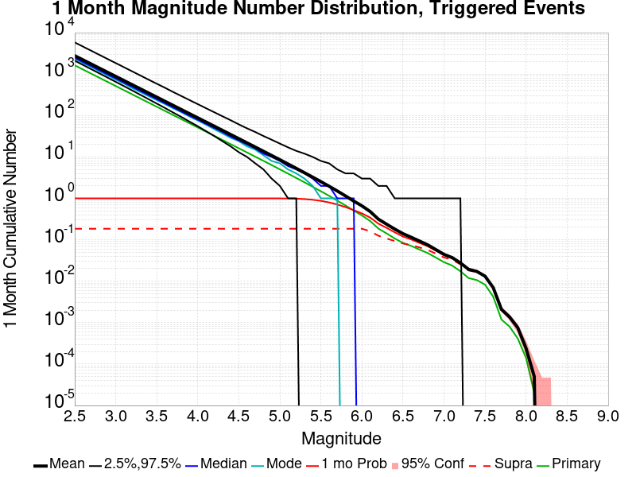
| Mag | Mean | 2.5 %ile | 97.5 %ile | Median | Mode | 1 mo Probability | 1 mo Supra-Seis Prob | Primary Aftershocks Mean |
|---|---|---|---|---|---|---|---|---|
| M≥2.5 | 2777.752 | 2104.000 | 5815.000 | 2468.000 | 2347.000 | 1.000 (100.00%) | 0.185 (18.50%) | 1627.813 |
| M≥2.6 | 2206.319 | 1666.000 | 4621.000 | 1961.000 | 1828.000 | 1.000 (100.00%) | 0.185 (18.50%) | 1292.914 |
| M≥2.7 | 1752.484 | 1318.000 | 3672.000 | 1558.000 | 1493.000 | 1.000 (100.00%) | 0.185 (18.50%) | 1027.002 |
| M≥2.8 | 1392.051 | 1042.000 | 2916.000 | 1239.000 | 1161.000 | 1.000 (100.00%) | 0.185 (18.50%) | 815.744 |
| M≥2.9 | 1105.741 | 824.000 | 2317.000 | 984.000 | 930.000 | 1.000 (100.00%) | 0.185 (18.50%) | 648.004 |
| M≥3 | 878.247 | 650.000 | 1843.000 | 782.000 | 735.000 | 1.000 (100.00%) | 0.185 (18.50%) | 514.678 |
| M≥3.1 | 697.502 | 512.000 | 1465.000 | 622.000 | 589.000 | 1.000 (100.00%) | 0.185 (18.50%) | 408.751 |
| M≥3.2 | 553.968 | 403.000 | 1164.000 | 494.000 | 458.000 | 1.000 (100.00%) | 0.185 (18.50%) | 324.629 |
| M≥3.3 | 440.006 | 316.000 | 924.000 | 393.000 | 368.000 | 1.000 (100.00%) | 0.185 (18.50%) | 257.853 |
| M≥3.4 | 349.484 | 248.000 | 734.000 | 313.000 | 293.000 | 1.000 (100.00%) | 0.185 (18.50%) | 204.818 |
| M≥3.5 | 277.595 | 194.000 | 585.000 | 249.000 | 234.000 | 1.000 (100.00%) | 0.185 (18.50%) | 162.694 |
| M≥3.6 | 220.418 | 152.000 | 467.000 | 198.000 | 189.000 | 1.000 (100.00%) | 0.185 (18.50%) | 129.184 |
| M≥3.7 | 175.047 | 118.000 | 369.000 | 157.000 | 149.000 | 1.000 (100.00%) | 0.185 (18.50%) | 102.599 |
| M≥3.8 | 139.008 | 92.000 | 295.000 | 125.000 | 120.000 | 1.000 (100.00%) | 0.185 (18.50%) | 81.481 |
| M≥3.9 | 110.400 | 71.000 | 235.000 | 99.000 | 94.000 | 1.000 (100.00%) | 0.185 (18.50%) | 64.718 |
| M≥4 | 87.654 | 55.000 | 188.000 | 79.000 | 76.000 | 1.000 (100.00%) | 0.185 (18.50%) | 51.387 |
| M≥4.1 | 69.594 | 42.000 | 150.000 | 63.000 | 60.000 | 1.000 (100.00%) | 0.185 (18.50%) | 40.800 |
| M≥4.2 | 55.238 | 32.000 | 120.000 | 50.000 | 47.000 | 1.000 (100.00%) | 0.185 (18.50%) | 32.388 |
| M≥4.3 | 43.832 | 24.000 | 96.000 | 40.000 | 37.000 | 1.000 (100.00%) | 0.185 (18.50%) | 25.703 |
| M≥4.4 | 34.770 | 18.000 | 77.000 | 31.000 | 29.000 | 1.000 (100.00%) | 0.185 (18.50%) | 20.384 |
| M≥4.5 | 27.574 | 13.000 | 61.000 | 25.000 | 24.000 | 1.000 (100.00%) | 0.185 (18.50%) | 16.167 |
| M≥4.6 | 21.851 | 10.000 | 49.000 | 20.000 | 18.000 | 1.000 (100.00%) | 0.185 (18.50%) | 12.812 |
| M≥4.7 | 17.305 | 7.000 | 40.000 | 16.000 | 15.000 | 1.000 (100.00%) | 0.185 (18.50%) | 10.145 |
| M≥4.8 | 13.703 | 5.000 | 32.000 | 12.000 | 11.000 | 1.000 (100.00%) | 0.185 (18.50%) | 8.039 |
| M≥4.9 | 10.832 | 3.000 | 26.000 | 10.000 | 8.000 | 1.000 (99.97%) | 0.185 (18.50%) | 6.360 |
| M≥5 | 8.550 | 2.000 | 21.000 | 8.000 | 7.000 | 0.998 (99.83%) | 0.185 (18.50%) | 5.017 |
| M≥5.1 | 6.741 | 1.000 | 17.000 | 6.000 | 5.000 | 0.994 (99.42%) | 0.185 (18.50%) | 3.953 |
| M≥5.2 | 5.300 | 1.000 | 14.000 | 5.000 | 4.000 | 0.984 (98.37%) | 0.185 (18.50%) | 3.108 |
| M≥5.3 | 4.158 | 0.000 | 12.000 | 4.000 | 3.000 | 0.962 (96.18%) | 0.185 (18.50%) | 2.438 |
| M≥5.4 | 3.250 | 0.000 | 10.000 | 3.000 | 2.000 | 0.925 (92.47%) | 0.185 (18.50%) | 1.902 |
| M≥5.5 | 2.531 | 0.000 | 8.000 | 2.000 | 1.000 | 0.870 (86.99%) | 0.185 (18.50%) | 1.484 |
| M≥5.6 | 1.962 | 0.000 | 7.000 | 2.000 | 1.000 | 0.797 (79.70%) | 0.185 (18.50%) | 1.151 |
| M≥5.7 | 1.505 | 0.000 | 5.000 | 1.000 | 1.000 | 0.710 (71.00%) | 0.185 (18.50%) | 0.882 |
| M≥5.8 | 1.143 | 0.000 | 4.000 | 1.000 | 0.000 | 0.616 (61.60%) | 0.185 (18.50%) | 0.672 |
| M≥5.9 | 0.860 | 0.000 | 4.000 | 1.000 | 0.000 | 0.520 (51.98%) | 0.185 (18.49%) | 0.507 |
| M≥6 | 0.660 | 0.000 | 3.000 | 0.000 | 0.000 | 0.433 (43.32%) | 0.185 (18.48%) | 0.386 |
| M≥6.1 | 0.481 | 0.000 | 3.000 | 0.000 | 0.000 | 0.344 (34.39%) | 0.161 (16.08%) | 0.284 |
| M≥6.2 | 0.316 | 0.000 | 2.000 | 0.000 | 0.000 | 0.245 (24.53%) | 0.125 (12.53%) | 0.187 |
| M≥6.3 | 0.238 | 0.000 | 2.000 | 0.000 | 0.000 | 0.194 (19.43%) | 0.107 (10.74%) | 0.143 |
| M≥6.4 | 0.181 | 0.000 | 1.000 | 0.000 | 0.000 | 0.152 (15.16%) | 0.093 (9.33%) | 0.107 |
| M≥6.5 | 0.141 | 0.000 | 1.000 | 0.000 | 0.000 | 0.120 (12.00%) | 0.081 (8.12%) | 0.084 |
| M≥6.6 | 0.115 | 0.000 | 1.000 | 0.000 | 0.000 | 0.102 (10.20%) | 0.075 (7.52%) | 0.071 |
| M≥6.7 | 0.093 | 0.000 | 1.000 | 0.000 | 0.000 | 0.084 (8.43%) | 0.065 (6.55%) | 0.058 |
| M≥6.8 | 0.076 | 0.000 | 1.000 | 0.000 | 0.000 | 0.070 (6.99%) | 0.057 (5.69%) | 0.048 |
| M≥6.9 | 0.058 | 0.000 | 1.000 | 0.000 | 0.000 | 0.055 (5.49%) | 0.046 (4.64%) | 0.037 |
| M≥7 | 0.044 | 0.000 | 1.000 | 0.000 | 0.000 | 0.043 (4.27%) | 0.037 (3.75%) | 0.029 |
| M≥7.1 | 0.037 | 0.000 | 1.000 | 0.000 | 0.000 | 0.036 (3.61%) | 0.033 (3.31%) | 0.024 |
| M≥7.2 | 0.028 | 0.000 | 1.000 | 0.000 | 0.000 | 0.027 (2.70%) | 0.025 (2.55%) | 0.017 |
| M≥7.3 | 0.019 | 0.000 | 0.000 | 0.000 | 0.000 | 0.019 (1.90%) | 0.018 (1.81%) | 0.012 |
| M≥7.4 | 0.017 | 0.000 | 0.000 | 0.000 | 0.000 | 0.017 (1.69%) | 0.017 (1.66%) | 0.011 |
| M≥7.5 | 0.013 | 0.000 | 0.000 | 0.000 | 0.000 | 0.013 (1.31%) | 0.013 (1.30%) | 8.28E-3 |
| M≥7.6 | 7.00E-3 | 0.000 | 0.000 | 0.000 | 0.000 | 6.94E-3 (0.69%) | 6.88E-3 (0.69%) | 4.23E-3 |
| M≥7.7 | 2.09E-3 | 0.000 | 0.000 | 0.000 | 0.000 | 2.07E-3 (0.21%) | 2.02E-3 (0.20%) | 1.19E-3 |
| M≥7.8 | 1.36E-3 | 0.000 | 0.000 | 0.000 | 0.000 | 1.36E-3 (0.14%) | 1.33E-3 (0.13%) | 8.00E-4 |
| M≥7.9 | 7.50E-4 | 0.000 | 0.000 | 0.000 | 0.000 | 7.50E-4 (0.07%) | 7.50E-4 (0.07%) | 4.10E-4 |
| M≥8 | 2.40E-4 | 0.000 | 0.000 | 0.000 | 0.000 | 2.40E-4 (0.02%) | 2.40E-4 (0.02%) | 1.40E-4 |
| M≥8.1 | 5.00E-5 | 0.000 | 0.000 | 0.000 | 0.000 | 5.00E-5 (0.01%) | 5.00E-5 (0.01%) | 2.00E-5 |
| M≥8.2 | 0.000 | 0.000 | 0.000 | 0.000 | 0.000 | 0.000 (0.00%) | 0.000 (0.00%) | 0.000 |
| M≥8.3 | 0.000 | 0.000 | 0.000 | 0.000 | 0.000 | 0.000 (0.00%) | 0.000 (0.00%) | 0.000 |
| M≥8.4 | 0.000 | 0.000 | 0.000 | 0.000 | 0.000 | 0.000 (0.00%) | 0.000 (0.00%) | 0.000 |
| M≥8.5 | 0.000 | 0.000 | 0.000 | 0.000 | 0.000 | 0.000 (0.00%) | 0.000 (0.00%) | 0.000 |
| M≥8.6 | 0.000 | 0.000 | 0.000 | 0.000 | 0.000 | 0.000 (0.00%) | 0.000 (0.00%) | 0.000 |
| M≥8.7 | 0.000 | 0.000 | 0.000 | 0.000 | 0.000 | 0.000 (0.00%) | 0.000 (0.00%) | 0.000 |
| M≥8.8 | 0.000 | 0.000 | 0.000 | 0.000 | 0.000 | 0.000 (0.00%) | 0.000 (0.00%) | 0.000 |
| M≥8.9 | 0.000 | 0.000 | 0.000 | 0.000 | 0.000 | 0.000 (0.00%) | 0.000 (0.00%) | 0.000 |
| M≥9 | 0.000 | 0.000 | 0.000 | 0.000 | 0.000 | 0.000 (0.00%) | 0.000 (0.00%) | 0.000 |
Legend

| Mag | Mean | 2.5 %ile | 97.5 %ile | Median | Mode | 1 wk Probability | 1 wk Supra-Seis Prob | Primary Aftershocks Mean |
|---|---|---|---|---|---|---|---|---|
| M≥2.5 | 2431.623 | 1878.000 | 4852.000 | 2182.000 | 2068.000 | 1.000 (100.00%) | 0.166 (16.58%) | 1496.091 |
| M≥2.6 | 1931.413 | 1487.000 | 3851.000 | 1734.000 | 1649.000 | 1.000 (100.00%) | 0.166 (16.58%) | 1188.313 |
| M≥2.7 | 1534.178 | 1176.000 | 3057.000 | 1378.000 | 1284.000 | 1.000 (100.00%) | 0.166 (16.58%) | 943.937 |
| M≥2.8 | 1218.631 | 930.000 | 2426.000 | 1095.000 | 1029.000 | 1.000 (100.00%) | 0.166 (16.58%) | 749.747 |
| M≥2.9 | 968.025 | 735.000 | 1929.000 | 871.000 | 811.000 | 1.000 (100.00%) | 0.166 (16.58%) | 595.599 |
| M≥3 | 768.840 | 579.000 | 1531.000 | 692.000 | 649.000 | 1.000 (100.00%) | 0.166 (16.58%) | 473.048 |
| M≥3.1 | 610.600 | 456.000 | 1218.000 | 550.000 | 526.000 | 1.000 (100.00%) | 0.166 (16.58%) | 375.674 |
| M≥3.2 | 484.939 | 359.000 | 968.000 | 437.000 | 416.000 | 1.000 (100.00%) | 0.166 (16.58%) | 298.359 |
| M≥3.3 | 385.178 | 281.000 | 770.000 | 348.000 | 329.000 | 1.000 (100.00%) | 0.166 (16.58%) | 236.986 |
| M≥3.4 | 305.921 | 221.000 | 614.000 | 277.000 | 263.000 | 1.000 (100.00%) | 0.166 (16.58%) | 188.235 |
| M≥3.5 | 242.998 | 173.000 | 490.000 | 220.000 | 214.000 | 1.000 (100.00%) | 0.166 (16.58%) | 149.526 |
| M≥3.6 | 192.947 | 135.000 | 389.000 | 175.000 | 166.000 | 1.000 (100.00%) | 0.166 (16.58%) | 118.728 |
| M≥3.7 | 153.228 | 105.000 | 310.000 | 139.000 | 133.000 | 1.000 (100.00%) | 0.166 (16.58%) | 94.295 |
| M≥3.8 | 121.682 | 81.000 | 247.000 | 111.000 | 107.000 | 1.000 (100.00%) | 0.166 (16.58%) | 74.891 |
| M≥3.9 | 96.639 | 63.000 | 197.000 | 88.000 | 82.000 | 1.000 (100.00%) | 0.166 (16.58%) | 59.480 |
| M≥4 | 76.730 | 48.000 | 157.000 | 70.000 | 65.000 | 1.000 (100.00%) | 0.166 (16.58%) | 47.232 |
| M≥4.1 | 60.922 | 37.000 | 126.000 | 56.000 | 52.000 | 1.000 (100.00%) | 0.166 (16.58%) | 37.502 |
| M≥4.2 | 48.352 | 28.000 | 101.000 | 44.000 | 42.000 | 1.000 (100.00%) | 0.166 (16.58%) | 29.769 |
| M≥4.3 | 38.366 | 21.000 | 80.000 | 35.000 | 34.000 | 1.000 (100.00%) | 0.166 (16.58%) | 23.624 |
| M≥4.4 | 30.429 | 16.000 | 64.000 | 28.000 | 25.000 | 1.000 (100.00%) | 0.166 (16.58%) | 18.732 |
| M≥4.5 | 24.131 | 11.000 | 52.000 | 22.000 | 20.000 | 1.000 (100.00%) | 0.166 (16.58%) | 14.856 |
| M≥4.6 | 19.122 | 8.000 | 42.000 | 17.000 | 16.000 | 1.000 (100.00%) | 0.166 (16.58%) | 11.773 |
| M≥4.7 | 15.142 | 6.000 | 34.000 | 14.000 | 12.000 | 1.000 (100.00%) | 0.166 (16.58%) | 9.323 |
| M≥4.8 | 11.995 | 4.000 | 27.000 | 11.000 | 10.000 | 1.000 (99.99%) | 0.166 (16.58%) | 7.388 |
| M≥4.9 | 9.484 | 3.000 | 22.000 | 9.000 | 8.000 | 0.999 (99.94%) | 0.166 (16.58%) | 5.846 |
| M≥5 | 7.483 | 2.000 | 18.000 | 7.000 | 6.000 | 0.997 (99.69%) | 0.166 (16.58%) | 4.610 |
| M≥5.1 | 5.900 | 1.000 | 15.000 | 5.000 | 4.000 | 0.990 (99.02%) | 0.166 (16.58%) | 3.632 |
| M≥5.2 | 4.638 | 1.000 | 12.000 | 4.000 | 3.000 | 0.975 (97.50%) | 0.166 (16.58%) | 2.856 |
| M≥5.3 | 3.639 | 0.000 | 10.000 | 3.000 | 3.000 | 0.947 (94.67%) | 0.166 (16.58%) | 2.241 |
| M≥5.4 | 2.845 | 0.000 | 8.000 | 2.000 | 2.000 | 0.901 (90.14%) | 0.166 (16.58%) | 1.750 |
| M≥5.5 | 2.216 | 0.000 | 7.000 | 2.000 | 1.000 | 0.839 (83.86%) | 0.166 (16.58%) | 1.365 |
| M≥5.6 | 1.717 | 0.000 | 6.000 | 1.000 | 1.000 | 0.760 (75.98%) | 0.166 (16.58%) | 1.059 |
| M≥5.7 | 1.317 | 0.000 | 5.000 | 1.000 | 0.000 | 0.669 (66.90%) | 0.166 (16.58%) | 0.811 |
| M≥5.8 | 1.000 | 0.000 | 4.000 | 1.000 | 0.000 | 0.575 (57.45%) | 0.166 (16.58%) | 0.618 |
| M≥5.9 | 0.753 | 0.000 | 3.000 | 0.000 | 0.000 | 0.480 (48.02%) | 0.166 (16.58%) | 0.466 |
| M≥6 | 0.577 | 0.000 | 3.000 | 0.000 | 0.000 | 0.397 (39.71%) | 0.166 (16.57%) | 0.355 |
| M≥6.1 | 0.421 | 0.000 | 2.000 | 0.000 | 0.000 | 0.312 (31.22%) | 0.144 (14.42%) | 0.261 |
| M≥6.2 | 0.275 | 0.000 | 2.000 | 0.000 | 0.000 | 0.220 (21.98%) | 0.112 (11.21%) | 0.171 |
| M≥6.3 | 0.208 | 0.000 | 2.000 | 0.000 | 0.000 | 0.173 (17.34%) | 0.096 (9.61%) | 0.131 |
| M≥6.4 | 0.158 | 0.000 | 1.000 | 0.000 | 0.000 | 0.135 (13.46%) | 0.083 (8.35%) | 0.098 |
| M≥6.5 | 0.122 | 0.000 | 1.000 | 0.000 | 0.000 | 0.106 (10.64%) | 0.073 (7.28%) | 0.077 |
| M≥6.6 | 0.101 | 0.000 | 1.000 | 0.000 | 0.000 | 0.091 (9.06%) | 0.067 (6.74%) | 0.065 |
| M≥6.7 | 0.082 | 0.000 | 1.000 | 0.000 | 0.000 | 0.075 (7.49%) | 0.059 (5.88%) | 0.054 |
| M≥6.8 | 0.067 | 0.000 | 1.000 | 0.000 | 0.000 | 0.062 (6.23%) | 0.051 (5.12%) | 0.044 |
| M≥6.9 | 0.051 | 0.000 | 1.000 | 0.000 | 0.000 | 0.049 (4.87%) | 0.042 (4.16%) | 0.034 |
| M≥7 | 0.039 | 0.000 | 1.000 | 0.000 | 0.000 | 0.038 (3.81%) | 0.034 (3.36%) | 0.027 |
| M≥7.1 | 0.033 | 0.000 | 1.000 | 0.000 | 0.000 | 0.032 (3.21%) | 0.030 (2.95%) | 0.022 |
| M≥7.2 | 0.024 | 0.000 | 0.000 | 0.000 | 0.000 | 0.024 (2.39%) | 0.023 (2.26%) | 0.016 |
| M≥7.3 | 0.017 | 0.000 | 0.000 | 0.000 | 0.000 | 0.017 (1.67%) | 0.016 (1.60%) | 0.011 |
| M≥7.4 | 0.015 | 0.000 | 0.000 | 0.000 | 0.000 | 0.015 (1.50%) | 0.015 (1.47%) | 0.010 |
| M≥7.5 | 0.012 | 0.000 | 0.000 | 0.000 | 0.000 | 0.012 (1.16%) | 0.012 (1.16%) | 7.80E-3 |
| M≥7.6 | 6.14E-3 | 0.000 | 0.000 | 0.000 | 0.000 | 6.10E-3 (0.61%) | 6.04E-3 (0.60%) | 3.98E-3 |
| M≥7.7 | 1.80E-3 | 0.000 | 0.000 | 0.000 | 0.000 | 1.78E-3 (0.18%) | 1.73E-3 (0.17%) | 1.14E-3 |
| M≥7.8 | 1.14E-3 | 0.000 | 0.000 | 0.000 | 0.000 | 1.14E-3 (0.11%) | 1.11E-3 (0.11%) | 7.60E-4 |
| M≥7.9 | 6.20E-4 | 0.000 | 0.000 | 0.000 | 0.000 | 6.20E-4 (0.06%) | 6.20E-4 (0.06%) | 3.90E-4 |
| M≥8 | 1.80E-4 | 0.000 | 0.000 | 0.000 | 0.000 | 1.80E-4 (0.02%) | 1.80E-4 (0.02%) | 1.30E-4 |
| M≥8.1 | 4.00E-5 | 0.000 | 0.000 | 0.000 | 0.000 | 4.00E-5 (0.00%) | 4.00E-5 (0.00%) | 2.00E-5 |
| M≥8.2 | 0.000 | 0.000 | 0.000 | 0.000 | 0.000 | 0.000 (0.00%) | 0.000 (0.00%) | 0.000 |
| M≥8.3 | 0.000 | 0.000 | 0.000 | 0.000 | 0.000 | 0.000 (0.00%) | 0.000 (0.00%) | 0.000 |
| M≥8.4 | 0.000 | 0.000 | 0.000 | 0.000 | 0.000 | 0.000 (0.00%) | 0.000 (0.00%) | 0.000 |
| M≥8.5 | 0.000 | 0.000 | 0.000 | 0.000 | 0.000 | 0.000 (0.00%) | 0.000 (0.00%) | 0.000 |
| M≥8.6 | 0.000 | 0.000 | 0.000 | 0.000 | 0.000 | 0.000 (0.00%) | 0.000 (0.00%) | 0.000 |
| M≥8.7 | 0.000 | 0.000 | 0.000 | 0.000 | 0.000 | 0.000 (0.00%) | 0.000 (0.00%) | 0.000 |
| M≥8.8 | 0.000 | 0.000 | 0.000 | 0.000 | 0.000 | 0.000 (0.00%) | 0.000 (0.00%) | 0.000 |
| M≥8.9 | 0.000 | 0.000 | 0.000 | 0.000 | 0.000 | 0.000 (0.00%) | 0.000 (0.00%) | 0.000 |
| M≥9 | 0.000 | 0.000 | 0.000 | 0.000 | 0.000 | 0.000 (0.00%) | 0.000 (0.00%) | 0.000 |
Legend

| Mag | Mean | 2.5 %ile | 97.5 %ile | Median | Mode | 1 d Probability | 1 d Supra-Seis Prob | Primary Aftershocks Mean |
|---|---|---|---|---|---|---|---|---|
| M≥2.5 | 1882.128 | 1507.000 | 3488.000 | 1719.000 | 1628.000 | 1.000 (100.00%) | 0.134 (13.44%) | 1264.128 |
| M≥2.6 | 1494.960 | 1192.000 | 2770.000 | 1366.000 | 1323.000 | 1.000 (100.00%) | 0.134 (13.44%) | 1004.066 |
| M≥2.7 | 1187.472 | 941.000 | 2201.000 | 1085.000 | 1053.000 | 1.000 (100.00%) | 0.134 (13.44%) | 797.572 |
| M≥2.8 | 943.202 | 743.000 | 1750.000 | 863.000 | 831.000 | 1.000 (100.00%) | 0.134 (13.44%) | 633.473 |
| M≥2.9 | 749.257 | 586.000 | 1390.000 | 686.000 | 656.000 | 1.000 (100.00%) | 0.134 (13.44%) | 503.221 |
| M≥3 | 595.074 | 461.000 | 1103.000 | 545.000 | 533.000 | 1.000 (100.00%) | 0.134 (13.44%) | 399.683 |
| M≥3.1 | 472.622 | 363.000 | 877.000 | 434.000 | 418.000 | 1.000 (100.00%) | 0.134 (13.44%) | 317.414 |
| M≥3.2 | 375.385 | 284.000 | 697.000 | 345.000 | 329.000 | 1.000 (100.00%) | 0.134 (13.44%) | 252.105 |
| M≥3.3 | 298.161 | 223.000 | 553.000 | 274.000 | 268.000 | 1.000 (100.00%) | 0.134 (13.44%) | 200.246 |
| M≥3.4 | 236.797 | 174.000 | 439.000 | 218.000 | 213.000 | 1.000 (100.00%) | 0.134 (13.44%) | 159.047 |
| M≥3.5 | 188.088 | 136.000 | 350.000 | 173.000 | 167.000 | 1.000 (100.00%) | 0.134 (13.44%) | 126.335 |
| M≥3.6 | 149.342 | 106.000 | 278.000 | 138.000 | 131.000 | 1.000 (100.00%) | 0.134 (13.44%) | 100.305 |
| M≥3.7 | 118.602 | 82.000 | 222.000 | 110.000 | 106.000 | 1.000 (100.00%) | 0.134 (13.44%) | 79.663 |
| M≥3.8 | 94.190 | 63.000 | 177.000 | 87.000 | 85.000 | 1.000 (100.00%) | 0.134 (13.44%) | 63.269 |
| M≥3.9 | 74.808 | 49.000 | 140.000 | 69.000 | 65.000 | 1.000 (100.00%) | 0.134 (13.44%) | 50.245 |
| M≥4 | 59.401 | 37.000 | 112.000 | 55.000 | 52.000 | 1.000 (100.00%) | 0.134 (13.44%) | 39.902 |
| M≥4.1 | 47.165 | 28.000 | 90.000 | 44.000 | 43.000 | 1.000 (100.00%) | 0.134 (13.44%) | 31.686 |
| M≥4.2 | 37.430 | 21.000 | 72.000 | 35.000 | 33.000 | 1.000 (100.00%) | 0.134 (13.44%) | 25.148 |
| M≥4.3 | 29.707 | 16.000 | 58.000 | 28.000 | 27.000 | 1.000 (100.00%) | 0.134 (13.44%) | 19.961 |
| M≥4.4 | 23.558 | 12.000 | 46.000 | 22.000 | 20.000 | 1.000 (100.00%) | 0.134 (13.44%) | 15.827 |
| M≥4.5 | 18.689 | 8.000 | 38.000 | 17.000 | 16.000 | 1.000 (100.00%) | 0.134 (13.44%) | 12.553 |
| M≥4.6 | 14.804 | 6.000 | 31.000 | 14.000 | 13.000 | 1.000 (100.00%) | 0.134 (13.44%) | 9.944 |
| M≥4.7 | 11.724 | 4.000 | 25.000 | 11.000 | 10.000 | 1.000 (99.99%) | 0.134 (13.44%) | 7.876 |
| M≥4.8 | 9.288 | 3.000 | 20.000 | 8.000 | 7.000 | 0.999 (99.94%) | 0.134 (13.44%) | 6.242 |
| M≥4.9 | 7.344 | 2.000 | 17.000 | 7.000 | 6.000 | 0.997 (99.71%) | 0.134 (13.44%) | 4.939 |
| M≥5 | 5.796 | 1.000 | 14.000 | 5.000 | 5.000 | 0.991 (99.06%) | 0.134 (13.44%) | 3.897 |
| M≥5.1 | 4.566 | 1.000 | 12.000 | 4.000 | 3.000 | 0.977 (97.65%) | 0.134 (13.44%) | 3.070 |
| M≥5.2 | 3.591 | 0.000 | 10.000 | 3.000 | 3.000 | 0.950 (94.99%) | 0.134 (13.44%) | 2.415 |
| M≥5.3 | 2.816 | 0.000 | 8.000 | 2.000 | 2.000 | 0.906 (90.57%) | 0.134 (13.44%) | 1.894 |
| M≥5.4 | 2.200 | 0.000 | 7.000 | 2.000 | 1.000 | 0.844 (84.43%) | 0.134 (13.44%) | 1.477 |
| M≥5.5 | 1.714 | 0.000 | 6.000 | 1.000 | 1.000 | 0.769 (76.95%) | 0.134 (13.44%) | 1.153 |
| M≥5.6 | 1.328 | 0.000 | 5.000 | 1.000 | 1.000 | 0.682 (68.25%) | 0.134 (13.44%) | 0.895 |
| M≥5.7 | 1.019 | 0.000 | 4.000 | 1.000 | 0.000 | 0.588 (58.79%) | 0.134 (13.44%) | 0.685 |
| M≥5.8 | 0.774 | 0.000 | 3.000 | 0.000 | 0.000 | 0.495 (49.55%) | 0.134 (13.44%) | 0.523 |
| M≥5.9 | 0.583 | 0.000 | 3.000 | 0.000 | 0.000 | 0.407 (40.73%) | 0.134 (13.44%) | 0.394 |
| M≥6 | 0.446 | 0.000 | 2.000 | 0.000 | 0.000 | 0.331 (33.11%) | 0.134 (13.43%) | 0.300 |
| M≥6.1 | 0.325 | 0.000 | 2.000 | 0.000 | 0.000 | 0.257 (25.67%) | 0.117 (11.73%) | 0.221 |
| M≥6.2 | 0.212 | 0.000 | 2.000 | 0.000 | 0.000 | 0.178 (17.76%) | 0.091 (9.05%) | 0.144 |
| M≥6.3 | 0.161 | 0.000 | 1.000 | 0.000 | 0.000 | 0.139 (13.94%) | 0.078 (7.76%) | 0.110 |
| M≥6.4 | 0.122 | 0.000 | 1.000 | 0.000 | 0.000 | 0.108 (10.76%) | 0.067 (6.74%) | 0.083 |
| M≥6.5 | 0.095 | 0.000 | 1.000 | 0.000 | 0.000 | 0.085 (8.50%) | 0.059 (5.89%) | 0.065 |
| M≥6.6 | 0.079 | 0.000 | 1.000 | 0.000 | 0.000 | 0.073 (7.28%) | 0.055 (5.48%) | 0.056 |
| M≥6.7 | 0.065 | 0.000 | 1.000 | 0.000 | 0.000 | 0.060 (6.03%) | 0.048 (4.78%) | 0.046 |
| M≥6.8 | 0.053 | 0.000 | 1.000 | 0.000 | 0.000 | 0.050 (5.01%) | 0.042 (4.16%) | 0.038 |
| M≥6.9 | 0.041 | 0.000 | 1.000 | 0.000 | 0.000 | 0.039 (3.92%) | 0.034 (3.37%) | 0.030 |
| M≥7 | 0.031 | 0.000 | 1.000 | 0.000 | 0.000 | 0.031 (3.05%) | 0.027 (2.72%) | 0.023 |
| M≥7.1 | 0.026 | 0.000 | 1.000 | 0.000 | 0.000 | 0.026 (2.58%) | 0.024 (2.39%) | 0.019 |
| M≥7.2 | 0.019 | 0.000 | 0.000 | 0.000 | 0.000 | 0.019 (1.92%) | 0.018 (1.82%) | 0.014 |
| M≥7.3 | 0.013 | 0.000 | 0.000 | 0.000 | 0.000 | 0.013 (1.33%) | 0.013 (1.28%) | 9.66E-3 |
| M≥7.4 | 0.012 | 0.000 | 0.000 | 0.000 | 0.000 | 0.012 (1.20%) | 0.012 (1.18%) | 8.68E-3 |
| M≥7.5 | 9.57E-3 | 0.000 | 0.000 | 0.000 | 0.000 | 9.48E-3 (0.95%) | 9.41E-3 (0.94%) | 6.84E-3 |
| M≥7.6 | 4.98E-3 | 0.000 | 0.000 | 0.000 | 0.000 | 4.95E-3 (0.50%) | 4.89E-3 (0.49%) | 3.51E-3 |
| M≥7.7 | 1.44E-3 | 0.000 | 0.000 | 0.000 | 0.000 | 1.42E-3 (0.14%) | 1.37E-3 (0.14%) | 9.70E-4 |
| M≥7.8 | 9.40E-4 | 0.000 | 0.000 | 0.000 | 0.000 | 9.40E-4 (0.09%) | 9.10E-4 (0.09%) | 6.50E-4 |
| M≥7.9 | 5.10E-4 | 0.000 | 0.000 | 0.000 | 0.000 | 5.10E-4 (0.05%) | 5.10E-4 (0.05%) | 3.30E-4 |
| M≥8 | 1.60E-4 | 0.000 | 0.000 | 0.000 | 0.000 | 1.60E-4 (0.02%) | 1.60E-4 (0.02%) | 1.20E-4 |
| M≥8.1 | 4.00E-5 | 0.000 | 0.000 | 0.000 | 0.000 | 4.00E-5 (0.00%) | 4.00E-5 (0.00%) | 2.00E-5 |
| M≥8.2 | 0.000 | 0.000 | 0.000 | 0.000 | 0.000 | 0.000 (0.00%) | 0.000 (0.00%) | 0.000 |
| M≥8.3 | 0.000 | 0.000 | 0.000 | 0.000 | 0.000 | 0.000 (0.00%) | 0.000 (0.00%) | 0.000 |
| M≥8.4 | 0.000 | 0.000 | 0.000 | 0.000 | 0.000 | 0.000 (0.00%) | 0.000 (0.00%) | 0.000 |
| M≥8.5 | 0.000 | 0.000 | 0.000 | 0.000 | 0.000 | 0.000 (0.00%) | 0.000 (0.00%) | 0.000 |
| M≥8.6 | 0.000 | 0.000 | 0.000 | 0.000 | 0.000 | 0.000 (0.00%) | 0.000 (0.00%) | 0.000 |
| M≥8.7 | 0.000 | 0.000 | 0.000 | 0.000 | 0.000 | 0.000 (0.00%) | 0.000 (0.00%) | 0.000 |
| M≥8.8 | 0.000 | 0.000 | 0.000 | 0.000 | 0.000 | 0.000 (0.00%) | 0.000 (0.00%) | 0.000 |
| M≥8.9 | 0.000 | 0.000 | 0.000 | 0.000 | 0.000 | 0.000 (0.00%) | 0.000 (0.00%) | 0.000 |
| M≥9 | 0.000 | 0.000 | 0.000 | 0.000 | 0.000 | 0.000 (0.00%) | 0.000 (0.00%) | 0.000 |
Legend

| Mag | Mean | 2.5 %ile | 97.5 %ile | Median | Mode | 1 hr Probability | 1 hr Supra-Seis Prob | Primary Aftershocks Mean |
|---|---|---|---|---|---|---|---|---|
| M≥2.5 | 863.383 | 746.000 | 1203.000 | 827.000 | 813.000 | 1.000 (100.00%) | 0.068 (6.76%) | 719.125 |
| M≥2.6 | 685.812 | 588.000 | 955.000 | 657.000 | 647.000 | 1.000 (100.00%) | 0.068 (6.76%) | 571.212 |
| M≥2.7 | 544.768 | 463.000 | 760.000 | 523.000 | 512.000 | 1.000 (100.00%) | 0.068 (6.76%) | 453.728 |
| M≥2.8 | 432.729 | 364.000 | 603.000 | 416.000 | 408.000 | 1.000 (100.00%) | 0.068 (6.76%) | 360.411 |
| M≥2.9 | 343.766 | 286.000 | 480.000 | 330.000 | 328.000 | 1.000 (100.00%) | 0.068 (6.76%) | 286.308 |
| M≥3 | 273.000 | 224.000 | 382.000 | 263.000 | 254.000 | 1.000 (100.00%) | 0.068 (6.76%) | 227.367 |
| M≥3.1 | 216.827 | 175.000 | 304.000 | 209.000 | 201.000 | 1.000 (100.00%) | 0.068 (6.76%) | 180.561 |
| M≥3.2 | 172.222 | 136.000 | 242.000 | 166.000 | 163.000 | 1.000 (100.00%) | 0.068 (6.76%) | 143.425 |
| M≥3.3 | 136.792 | 106.000 | 193.000 | 132.000 | 131.000 | 1.000 (100.00%) | 0.068 (6.76%) | 113.916 |
| M≥3.4 | 108.636 | 82.000 | 155.000 | 105.000 | 105.000 | 1.000 (100.00%) | 0.068 (6.76%) | 90.467 |
| M≥3.5 | 86.286 | 63.000 | 124.000 | 83.000 | 80.000 | 1.000 (100.00%) | 0.068 (6.76%) | 71.852 |
| M≥3.6 | 68.514 | 49.000 | 99.000 | 66.000 | 64.000 | 1.000 (100.00%) | 0.068 (6.76%) | 57.053 |
| M≥3.7 | 54.425 | 37.000 | 80.000 | 53.000 | 53.000 | 1.000 (100.00%) | 0.068 (6.76%) | 45.323 |
| M≥3.8 | 43.220 | 28.000 | 65.000 | 42.000 | 41.000 | 1.000 (100.00%) | 0.068 (6.76%) | 35.995 |
| M≥3.9 | 34.321 | 21.000 | 53.000 | 33.000 | 32.000 | 1.000 (100.00%) | 0.068 (6.76%) | 28.579 |
| M≥4 | 27.249 | 16.000 | 43.000 | 26.000 | 25.000 | 1.000 (100.00%) | 0.068 (6.76%) | 22.690 |
| M≥4.1 | 21.633 | 12.000 | 35.000 | 21.000 | 19.000 | 1.000 (100.00%) | 0.068 (6.76%) | 18.016 |
| M≥4.2 | 17.163 | 9.000 | 29.000 | 16.000 | 15.000 | 1.000 (100.00%) | 0.068 (6.76%) | 14.293 |
| M≥4.3 | 13.620 | 6.000 | 24.000 | 13.000 | 12.000 | 1.000 (100.00%) | 0.068 (6.76%) | 11.342 |
| M≥4.4 | 10.802 | 4.000 | 20.000 | 10.000 | 10.000 | 1.000 (99.99%) | 0.068 (6.76%) | 8.991 |
| M≥4.5 | 8.569 | 3.000 | 16.000 | 8.000 | 8.000 | 0.999 (99.95%) | 0.068 (6.76%) | 7.132 |
| M≥4.6 | 6.788 | 2.000 | 14.000 | 6.000 | 6.000 | 0.998 (99.78%) | 0.068 (6.76%) | 5.653 |
| M≥4.7 | 5.378 | 1.000 | 12.000 | 5.000 | 5.000 | 0.992 (99.21%) | 0.068 (6.76%) | 4.478 |
| M≥4.8 | 4.259 | 1.000 | 10.000 | 4.000 | 3.000 | 0.979 (97.91%) | 0.068 (6.76%) | 3.548 |
| M≥4.9 | 3.367 | 0.000 | 8.000 | 3.000 | 3.000 | 0.953 (95.32%) | 0.068 (6.76%) | 2.805 |
| M≥5 | 2.657 | 0.000 | 7.000 | 2.000 | 2.000 | 0.911 (91.12%) | 0.068 (6.76%) | 2.211 |
| M≥5.1 | 2.091 | 0.000 | 6.000 | 2.000 | 1.000 | 0.854 (85.43%) | 0.068 (6.76%) | 1.741 |
| M≥5.2 | 1.644 | 0.000 | 5.000 | 1.000 | 1.000 | 0.782 (78.21%) | 0.068 (6.76%) | 1.369 |
| M≥5.3 | 1.288 | 0.000 | 4.000 | 1.000 | 1.000 | 0.699 (69.87%) | 0.068 (6.76%) | 1.073 |
| M≥5.4 | 1.006 | 0.000 | 4.000 | 1.000 | 0.000 | 0.610 (60.97%) | 0.068 (6.76%) | 0.838 |
| M≥5.5 | 0.783 | 0.000 | 3.000 | 1.000 | 0.000 | 0.520 (51.96%) | 0.068 (6.76%) | 0.653 |
| M≥5.6 | 0.608 | 0.000 | 3.000 | 0.000 | 0.000 | 0.435 (43.50%) | 0.068 (6.76%) | 0.507 |
| M≥5.7 | 0.466 | 0.000 | 2.000 | 0.000 | 0.000 | 0.355 (35.52%) | 0.068 (6.76%) | 0.388 |
| M≥5.8 | 0.355 | 0.000 | 2.000 | 0.000 | 0.000 | 0.285 (28.53%) | 0.068 (6.76%) | 0.296 |
| M≥5.9 | 0.268 | 0.000 | 2.000 | 0.000 | 0.000 | 0.225 (22.54%) | 0.068 (6.75%) | 0.223 |
| M≥6 | 0.205 | 0.000 | 1.000 | 0.000 | 0.000 | 0.178 (17.84%) | 0.068 (6.75%) | 0.171 |
| M≥6.1 | 0.151 | 0.000 | 1.000 | 0.000 | 0.000 | 0.135 (13.52%) | 0.060 (5.98%) | 0.126 |
| M≥6.2 | 0.098 | 0.000 | 1.000 | 0.000 | 0.000 | 0.091 (9.09%) | 0.046 (4.60%) | 0.082 |
| M≥6.3 | 0.075 | 0.000 | 1.000 | 0.000 | 0.000 | 0.071 (7.08%) | 0.040 (3.96%) | 0.063 |
| M≥6.4 | 0.057 | 0.000 | 1.000 | 0.000 | 0.000 | 0.054 (5.41%) | 0.035 (3.45%) | 0.048 |
| M≥6.5 | 0.045 | 0.000 | 1.000 | 0.000 | 0.000 | 0.043 (4.27%) | 0.030 (3.02%) | 0.038 |
| M≥6.6 | 0.038 | 0.000 | 1.000 | 0.000 | 0.000 | 0.037 (3.67%) | 0.028 (2.82%) | 0.032 |
| M≥6.7 | 0.031 | 0.000 | 1.000 | 0.000 | 0.000 | 0.030 (3.04%) | 0.025 (2.46%) | 0.027 |
| M≥6.8 | 0.026 | 0.000 | 1.000 | 0.000 | 0.000 | 0.026 (2.55%) | 0.021 (2.14%) | 0.022 |
| M≥6.9 | 0.020 | 0.000 | 0.000 | 0.000 | 0.000 | 0.020 (2.01%) | 0.017 (1.75%) | 0.018 |
| M≥7 | 0.016 | 0.000 | 0.000 | 0.000 | 0.000 | 0.015 (1.55%) | 0.014 (1.40%) | 0.013 |
| M≥7.1 | 0.013 | 0.000 | 0.000 | 0.000 | 0.000 | 0.013 (1.30%) | 0.012 (1.21%) | 0.011 |
| M≥7.2 | 9.48E-3 | 0.000 | 0.000 | 0.000 | 0.000 | 9.40E-3 (0.94%) | 8.99E-3 (0.90%) | 7.99E-3 |
| M≥7.3 | 6.57E-3 | 0.000 | 0.000 | 0.000 | 0.000 | 6.52E-3 (0.65%) | 6.34E-3 (0.63%) | 5.57E-3 |
| M≥7.4 | 5.95E-3 | 0.000 | 0.000 | 0.000 | 0.000 | 5.90E-3 (0.59%) | 5.85E-3 (0.58%) | 5.02E-3 |
| M≥7.5 | 4.70E-3 | 0.000 | 0.000 | 0.000 | 0.000 | 4.66E-3 (0.47%) | 4.65E-3 (0.46%) | 3.91E-3 |
| M≥7.6 | 2.41E-3 | 0.000 | 0.000 | 0.000 | 0.000 | 2.39E-3 (0.24%) | 2.38E-3 (0.24%) | 1.93E-3 |
| M≥7.7 | 6.60E-4 | 0.000 | 0.000 | 0.000 | 0.000 | 6.50E-4 (0.07%) | 6.50E-4 (0.07%) | 5.20E-4 |
| M≥7.8 | 4.70E-4 | 0.000 | 0.000 | 0.000 | 0.000 | 4.70E-4 (0.05%) | 4.70E-4 (0.05%) | 3.70E-4 |
| M≥7.9 | 2.80E-4 | 0.000 | 0.000 | 0.000 | 0.000 | 2.80E-4 (0.03%) | 2.80E-4 (0.03%) | 2.30E-4 |
| M≥8 | 1.20E-4 | 0.000 | 0.000 | 0.000 | 0.000 | 1.20E-4 (0.01%) | 1.20E-4 (0.01%) | 9.00E-5 |
| M≥8.1 | 3.00E-5 | 0.000 | 0.000 | 0.000 | 0.000 | 3.00E-5 (0.00%) | 3.00E-5 (0.00%) | 2.00E-5 |
| M≥8.2 | 0.000 | 0.000 | 0.000 | 0.000 | 0.000 | 0.000 (0.00%) | 0.000 (0.00%) | 0.000 |
| M≥8.3 | 0.000 | 0.000 | 0.000 | 0.000 | 0.000 | 0.000 (0.00%) | 0.000 (0.00%) | 0.000 |
| M≥8.4 | 0.000 | 0.000 | 0.000 | 0.000 | 0.000 | 0.000 (0.00%) | 0.000 (0.00%) | 0.000 |
| M≥8.5 | 0.000 | 0.000 | 0.000 | 0.000 | 0.000 | 0.000 (0.00%) | 0.000 (0.00%) | 0.000 |
| M≥8.6 | 0.000 | 0.000 | 0.000 | 0.000 | 0.000 | 0.000 (0.00%) | 0.000 (0.00%) | 0.000 |
| M≥8.7 | 0.000 | 0.000 | 0.000 | 0.000 | 0.000 | 0.000 (0.00%) | 0.000 (0.00%) | 0.000 |
| M≥8.8 | 0.000 | 0.000 | 0.000 | 0.000 | 0.000 | 0.000 (0.00%) | 0.000 (0.00%) | 0.000 |
| M≥8.9 | 0.000 | 0.000 | 0.000 | 0.000 | 0.000 | 0.000 (0.00%) | 0.000 (0.00%) | 0.000 |
| M≥9 | 0.000 | 0.000 | 0.000 | 0.000 | 0.000 | 0.000 (0.00%) | 0.000 (0.00%) | 0.000 |
These plots show how the probability of ruptures of various magnitudes within 100km of any scenario rupture changes over time

| Forecast Duration | UCERF3-ETAS [95% Conf] | UCERF3-ETAS Triggered Only | UCERF3-TD | UCERF3-ETAS/TD Gain | UCERF3-TI |
|---|---|---|---|---|---|
| 1 Hour | 0.910 [0.908 - 0.912] | 0.910 | 6.97E-5 | 13047.08 | 6.92E-5 |
| 1 Day | 0.990 [0.990 - 0.991] | 0.990 | 1.67E-3 | 592.16 | 1.66E-3 |
| 1 Week | 0.997 [0.996 - 0.997] | 0.997 | 0.012 | 85.58 | 0.012 |
| 1 Month | 0.998 [0.998 - 0.999] | 0.998 | 0.049 | 20.38 | 0.049 |
| 1 Year | 1.000 [0.999 - 1.000] | 0.999 | 0.457 | 2.19 | 0.455 |
| 10 Years | 1.000 [1.000 - 1.000] | 1.000 | 0.998 | 1 | 0.998 |
| 30 Years | 1.000 [1.000 - 1.000] * | * | 1.000 | 1 * | 1.000 |
| 100 Years | 1.000 [1.000 - 1.000] * | * | 1.000 | 1 * | 1.000 |
* forecast duration is longer than simulation length, only ETAS ruptures from the first 10 years are included

| Forecast Duration | UCERF3-ETAS [95% Conf] | UCERF3-ETAS Triggered Only | UCERF3-TD | UCERF3-ETAS/TD Gain | UCERF3-TI |
|---|---|---|---|---|---|
| 1 Hour | 0.177 [0.175 - 0.179] | 0.177 | 7.73E-6 | 22899.57 | 7.23E-6 |
| 1 Day | 0.329 [0.326 - 0.331] | 0.328 | 1.85E-4 | 1771.73 | 1.73E-4 |
| 1 Week | 0.395 [0.392 - 0.398] | 0.394 | 1.30E-3 | 304.14 | 1.21E-3 |
| 1 Month | 0.433 [0.430 - 0.436] | 0.430 | 5.55E-3 | 78.01 | 5.19E-3 |
| 1 Year | 0.507 [0.504 - 0.510] | 0.472 | 0.066 | 7.74 | 0.061 |
| 10 Years | 0.744 [0.742 - 0.745] | 0.495 | 0.492 | 1.51 | 0.469 |
| 30 Years | 0.934 [0.934 - 0.935] * | * | 0.870 | 1.07 * | 0.851 |
| 100 Years | 0.999 [0.999 - 0.999] * | * | 0.999 | 1 * | 0.998 |
* forecast duration is longer than simulation length, only ETAS ruptures from the first 10 years are included

| Forecast Duration | UCERF3-ETAS [95% Conf] | UCERF3-ETAS Triggered Only | UCERF3-TD | UCERF3-ETAS/TD Gain | UCERF3-TI |
|---|---|---|---|---|---|
| 1 Hour | 0.015 [0.015 - 0.016] | 0.015 | 7.12E-7 | 21625.59 | 6.43E-7 |
| 1 Day | 0.030 [0.029 - 0.031] | 0.030 | 1.71E-5 | 1774.93 | 1.54E-5 |
| 1 Week | 0.038 [0.037 - 0.039] | 0.038 | 1.20E-4 | 316.13 | 1.08E-4 |
| 1 Month | 0.043 [0.041 - 0.044] | 0.042 | 5.12E-4 | 83.41 | 4.63E-4 |
| 1 Year | 0.055 [0.053 - 0.056] | 0.049 | 6.22E-3 | 8.77 | 5.62E-3 |
| 10 Years | 0.109 [0.108 - 0.111] | 0.052 | 0.061 | 1.81 | 0.055 |
| 30 Years | 0.216 [0.215 - 0.217] * | * | 0.173 | 1.25 * | 0.156 |
| 100 Years | 0.510 [0.509 - 0.510] * | * | 0.483 | 1.06 * | 0.431 |
* forecast duration is longer than simulation length, only ETAS ruptures from the first 10 years are included

| Forecast Duration | UCERF3-ETAS [95% Conf] | UCERF3-ETAS Triggered Only | UCERF3-TD | UCERF3-ETAS/TD Gain | UCERF3-TI |
|---|---|---|---|---|---|
| 1 Hour | 1.20E-4 [6.50E-5 - 2.16E-4] | 1.20E-4 | 1.24E-8 | 9704.89 | 1.06E-8 |
| 1 Day | 1.60E-4 [9.50E-5 - 2.66E-4] | 1.60E-4 | 2.97E-7 | 540.11 | 2.54E-7 |
| 1 Week | 1.82E-4 [1.12E-4 - 2.93E-4] | 1.80E-4 | 2.08E-6 | 87.64 | 1.78E-6 |
| 1 Month | 2.39E-4 [1.58E-4 - 3.60E-4] | 2.30E-4 | 8.90E-6 | 26.83 | 7.63E-6 |
| 1 Year | 3.68E-4 [2.82E-4 - 4.95E-4] | 2.60E-4 | 1.08E-4 | 3.4 | 9.29E-5 |
| 10 Years | 1.38E-3 [1.29E-3 - 1.51E-3] | 2.80E-4 | 1.10E-3 | 1.25 | 9.29E-4 |
| 30 Years | 3.78E-3 [3.69E-3 - 3.91E-3] * | * | 3.50E-3 | 1.08 * | 2.78E-3 |
| 100 Years | 0.014 [0.014 - 0.014] * | * | 0.014 | 1.02 * | 9.25E-3 |
* forecast duration is longer than simulation length, only ETAS ruptures from the first 10 years are included


| Section Name | Strike, Dip, Rake | # Hypos In Poly | Max Mag w/ Hypo In Poly | # Surfs In Poly | Max Mag w/ Surf In Poly | Min Dist To Any (km) | Min Poly Dist To Any (km) | Min Dist To Largest (km) | Min Poly Dist To Largest (km) | Min Hypo Dist To Largest (km) | Min Hypo Poly Dist To Largest (km) |
|---|---|---|---|---|---|---|---|---|---|---|---|
| Airport Lake | 359, 50, -90 | 91 | 7.1 | 91 | 7.1 | 0.036 | 0.000 | 0.036 | 0.000 | 5.612 | 0.000 |
| Little Lake | 327, 90, 180 | 15 | 3.75 | 16 | 7.1 | 2.268 | 0.000 | 11.284 | 0.000 | 13.471 | 1.469 |
| Garlock (Central) | 71, 90, 0 | 2 | 2.76 | 3 | 7.1 | 5.600 | 0.000 | 5.600 | 0.000 | 22.766 | 10.797 |
| So Sierra Nevada | 2, 50, -90 | 0 | 0 | 4.248 | 4.233 | 4.248 | 4.233 | 16.191 | 15.188 | ||
| Tank Canyon | 189, 50, -90 | 0 | 0 | 9.015 | 9.011 | 9.015 | 9.011 | 17.039 | 16.895 | ||
| Blackwater | 323, 90, 180 | 0 | 0 | 14.394 | 8.726 | 14.394 | 8.726 | 29.622 | 27.613 |
These are map plots of individual catalogs from the simulations, selected as the closest catalog to each of the given percentiles in terms of total number of events.
| Duration | p0.0 %-ile | p25.0 %-ile | p50.0 %-ile | p75.0 %-ile | p90.0 %-ile | p95.0 %-ile | p97.5 %-ile | p98.0 %-ile | p99.0 %-ile | p99.5 %-ile | p99.9 %-ile | p100.0 %-ile |
|---|---|---|---|---|---|---|---|---|---|---|---|---|
| 1 Week |  |  |  |  |  | 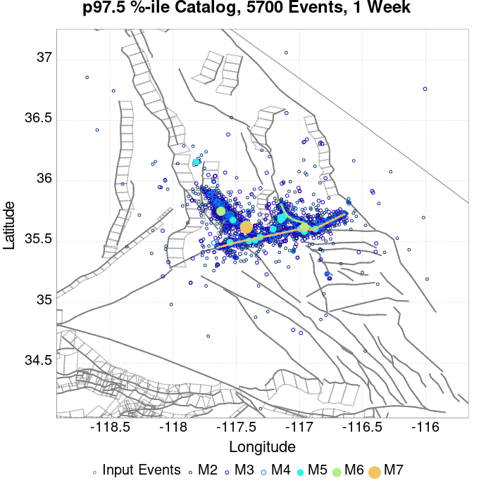 |  | 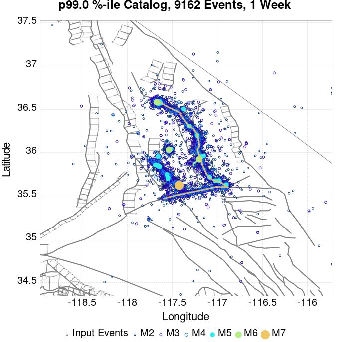 |  |  |  | |
| 1 Month |  |  |  |  |  |  |  |  |  |  |  |  |
| 1 Year |  |  |  |  |  |  |  |  |  |  |  |  |
| 10 Year |  |  |  |  |  |  |  |  |  |  |  |  |
These plots compare simulated sequences with data from ComCat. All plots only consider events with hypocenters inside the ComCat region defined in the JSON input file.
Last updated at 2019/12/20 15:33:26 UTC, 24 weeks after the simulation start time.
Total matching ComCat events found: 2172
| Incremental MND | Cumulative MND |
|---|---|
 |  |
The following plots compare simulation results with ComCat data above a magnitude threshold. Plots labeled as M≥Mc(t) use the time-dependent magnitude of completeness (Mc) defined in Helmstetter et al. (2006), which is plotted below. In the case of multiple M≥5 ruptures, either as input to the simulation or in the comparison data, the maximum calculated time-dependent Mc is used. This time-dependent Mc function is plotted below.
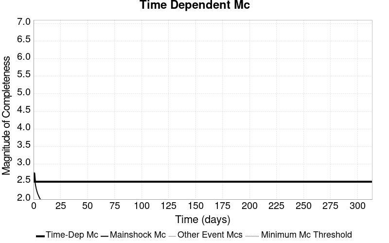
| M≥Mc(t) | M≥3.5 | M≥4 | M≥5 | M≥6 | M≥7 |
|---|---|---|---|---|---|
| 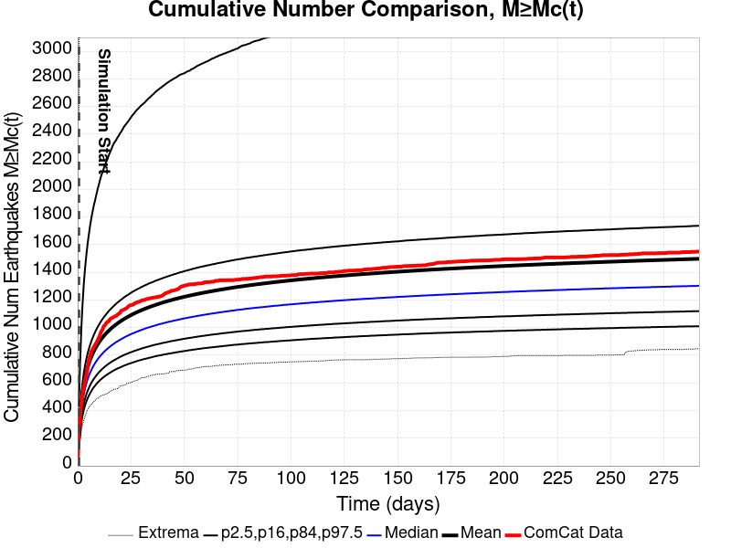 | 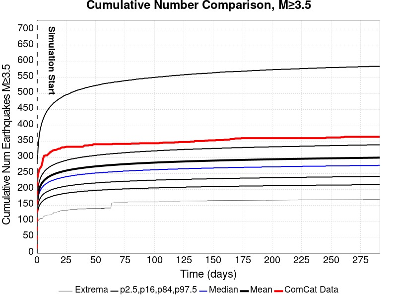 |  | 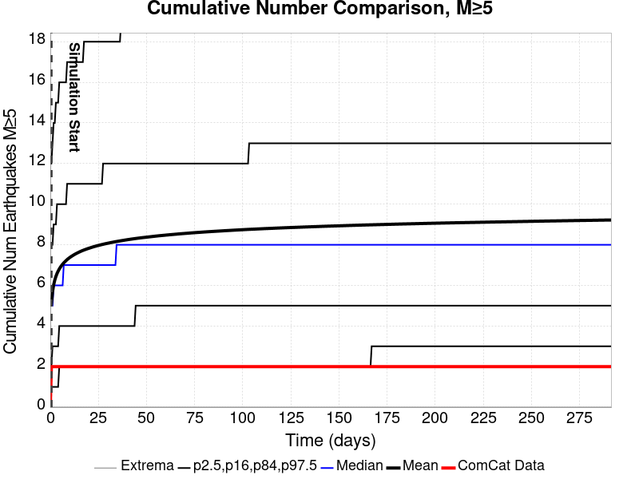 |  |  |

Note: maps labeled 'Forecast' are for a duration that extends into the future, only forecasted values are plotted (ComCat data omitted)
| 1 Day | 1 Week | 1 Month | Current (24 Week) | Forecast: 1 Year | |
|---|---|---|---|---|---|
| M≥Mc(t) | 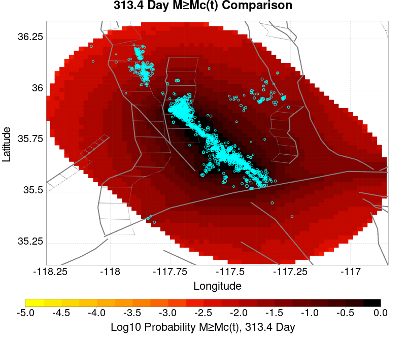 | ||||
| Prob: 100.00%, Actual: 316 | Prob: 100.00%, Actual: 825 | Prob: 100.00%, Actual: 1176 | Prob: 100.00%, Actual: 1443 | Prob: 100.00% | |
| M≥3.5 |  |  |  | ||
| Prob: 100.00%, Actual: 216 | Prob: 100.00%, Actual: 270 | Prob: 100.00%, Actual: 299 | Prob: 100.00%, Actual: 323 | Prob: 100.00% | |
| M≥4 |  |  |  | ||
| Prob: 100.00%, Actual: 63 | Prob: 100.00%, Actual: 75 | Prob: 100.00%, Actual: 81 | Prob: 100.00%, Actual: 83 | Prob: 100.00% | |
| M≥5 |  |  |  |  | |
| Prob: 98.98%, Actual: 2 | Prob: 99.66%, Actual: 2 | Prob: 99.81%, Actual: 2 | Prob: 99.90%, Actual: 3 | Prob: 99.91% | |
| M≥6 |  |  |  | ||
| Prob: 32.26%, Actual: 0 | Prob: 38.67%, Actual: 0 | Prob: 42.19%, Actual: 0 | Prob: 45.34%, Actual: 0 | Prob: 46.39% | |
| M≥7 |  |  |  |  | |
| Prob: 2.97%, Actual: 0 | Prob: 3.67%, Actual: 0 | Prob: 4.12%, Actual: 0 | Prob: 4.58%, Actual: 0 | Prob: 4.72% | |
| M≥8 | 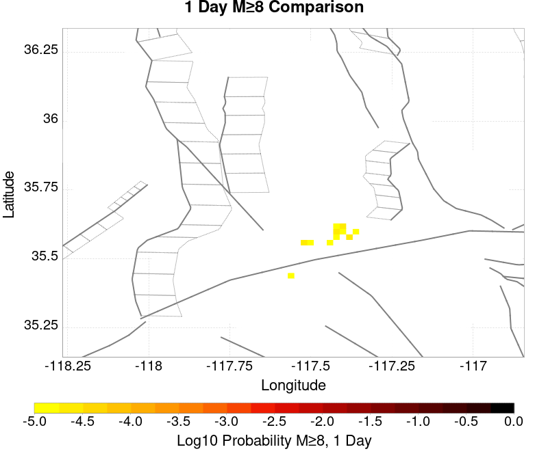 |  |  |  | |
| Prob: 0.02%, Actual: 0 | Prob: 0.02%, Actual: 0 | Prob: 0.02%, Actual: 0 | Prob: 0.03%, Actual: 0 | Prob: 0.03% |
Note: maps labeled 'Forecast' are for a duration that extends into the future, only forecasted values are plotted (ComCat data omitted)
| 1 Day | 1 Week | 1 Month | Current (24 Week) | Forecast: 1 Year | |
|---|---|---|---|---|---|
| M≥Mc(t) | |||||
| Mean: 309.939, Actual: 316 | Mean: 809.984, Actual: 825 | Mean: 1126.551, Actual: 1176 | Mean: 1420.847, Actual: 1443 | Mean: 1527.097 | |
| M≥3.5 |  |  |  |  | |
| Mean: 180.223, Actual: 216 | Mean: 231.065, Actual: 270 | Mean: 262.703, Actual: 299 | Mean: 292.116, Actual: 323 | Mean: 302.735 | |
| M≥4 |  |  |  |  | |
| Mean: 56.911, Actual: 63 | Mean: 72.954, Actual: 75 | Mean: 82.943, Actual: 81 | Mean: 92.240, Actual: 83 | Mean: 95.585 | |
| M≥5 |  |  |  |  | |
| Mean: 5.544, Actual: 2 | Mean: 7.104, Actual: 2 | Mean: 8.077, Actual: 2 | Mean: 8.982, Actual: 3 | Mean: 9.308 | |
| M≥6 |  |  |  |  | |
| Mean: 0.418, Actual: 0 | Mean: 0.536, Actual: 0 | Mean: 0.609, Actual: 0 | Mean: 0.678, Actual: 0 | Mean: 0.703 | |
| M≥7 |  |  |  | 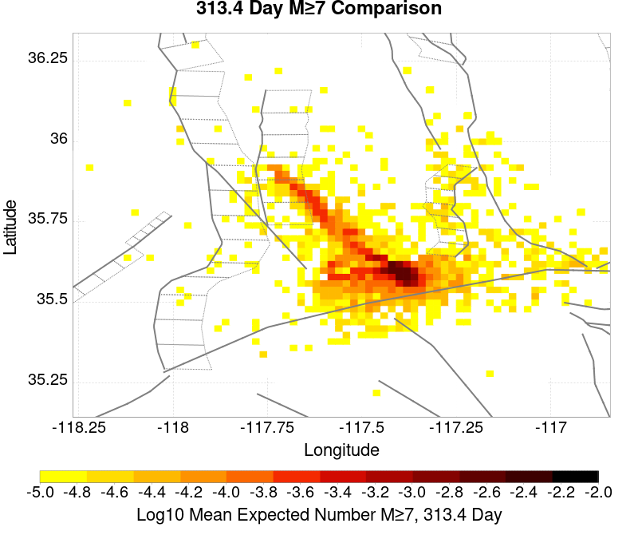 | |
| Mean: 0.030, Actual: 0 | Mean: 0.037, Actual: 0 | Mean: 0.042, Actual: 0 | Mean: 0.047, Actual: 0 | Mean: 0.049 | |
| M≥8 |  |  |  |  | |
| Mean: 1.60E-4, Actual: 0 | Mean: 1.80E-4, Actual: 0 | Mean: 2.30E-4, Actual: 0 | Mean: 2.60E-4, Actual: 0 | Mean: 2.60E-4 |
| M≥Mc(t) | M≥3.5 | M≥4 | M≥5 | M≥6 | M≥7 | M≥8 |
|---|---|---|---|---|---|---|
| 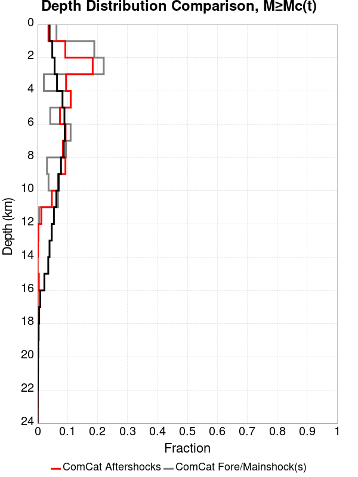 |  |  |  |  |  |  |
| Min Mag | 1 yr Triggered Ruptures (no spontaneous) | 10 yr Triggered Ruptures (no spontaneous) | 10 yr Triggered Ruptures (primary aftershocks only) |
|---|---|---|---|
| All Supra. Seis. |  |  |  |
| M≥6.5 |  |  |  |
| M≥7 |  |  |  |
| M≥7.5 |  |  |  |
| M≥8 |  |  |  |
First 10 of 182 with matching ruptures shown
| Parent Name | Triggered 10 Year Mean Count | Triggered 1 Day Prob | Triggered 1 Week Prob | Triggered 1 Month Prob | Triggered 1 Year Prob | Triggered 10 Year Prob | Triggered 10 Year Primary Mean Count |
|---|---|---|---|---|---|---|---|
| Garlock (Central) | 0.09971 | 0.059 | 0.07236 | 0.08059 | 0.09094 | 0.09688 | 0.06326 |
| Tank Canyon | 0.07031 | 0.03171 | 0.04189 | 0.04839 | 0.05712 | 0.06236 | 0.02409 |
| Little Lake | 0.04629 | 0.02837 | 0.03441 | 0.03813 | 0.04261 | 0.0454 | 0.03066 |
| Airport Lake | 0.04015 | 0.02629 | 0.0316 | 0.03459 | 0.03794 | 0.03999 | 0.02935 |
| Owl Lake | 0.0285 | 0.01312 | 0.01735 | 0.02009 | 0.0238 | 0.02576 | 0.00973 |
| Panamint Valley | 0.02137 | 0.01132 | 0.01448 | 0.0165 | 0.01937 | 0.02102 | 0.00968 |
| Garlock (East) | 0.0177 | 0.00791 | 0.01081 | 0.01255 | 0.01506 | 0.01638 | 0.00632 |
| Hunter Mountain-Saline Valley | 0.01052 | 0.00611 | 0.00746 | 0.00837 | 0.00965 | 0.0104 | 0.00571 |
| Blackwater | 0.00717 | 0.00308 | 0.00419 | 0.00513 | 0.00633 | 0.00694 | 0.00214 |
| Ash Hill | 0.00707 | 0.00287 | 0.0042 | 0.005 | 0.00604 | 0.00679 | 0.00145 |
First 10 of 150 with matching ruptures shown
| Parent Name | Triggered 10 Year Mean Count | Triggered 1 Day Prob | Triggered 1 Week Prob | Triggered 1 Month Prob | Triggered 1 Year Prob | Triggered 10 Year Prob | Triggered 10 Year Primary Mean Count |
|---|---|---|---|---|---|---|---|
| Garlock (Central) | 0.04227 | 0.02467 | 0.03061 | 0.03437 | 0.03923 | 0.04182 | 0.02605 |
| Airport Lake | 0.03057 | 0.02008 | 0.02401 | 0.02639 | 0.02891 | 0.03053 | 0.0225 |
| Little Lake | 0.02874 | 0.01804 | 0.02175 | 0.02407 | 0.02674 | 0.02841 | 0.01975 |
| Panamint Valley | 0.01998 | 0.01089 | 0.01377 | 0.01558 | 0.0182 | 0.0197 | 0.00955 |
| Owl Lake | 0.01657 | 0.00917 | 0.01175 | 0.01326 | 0.01553 | 0.01651 | 0.00867 |
| Garlock (East) | 0.01244 | 0.00626 | 0.00832 | 0.00946 | 0.01104 | 0.01188 | 0.00593 |
| Hunter Mountain-Saline Valley | 0.01037 | 0.00603 | 0.00737 | 0.00828 | 0.00953 | 0.01028 | 0.00569 |
| Tank Canyon | 0.00804 | 0.0038 | 0.00522 | 0.00613 | 0.0073 | 0.00801 | 0.00269 |
| Garlock (West) | 0.00648 | 0.0038 | 0.00476 | 0.00541 | 0.00612 | 0.00647 | 0.00404 |
| So Sierra Nevada | 0.00298 | 0.00137 | 0.00182 | 0.00221 | 0.00265 | 0.00297 | 7.9E-4 |
First 10 of 107 with matching ruptures shown
| Parent Name | Triggered 10 Year Mean Count | Triggered 1 Day Prob | Triggered 1 Week Prob | Triggered 1 Month Prob | Triggered 1 Year Prob | Triggered 10 Year Prob | Triggered 10 Year Primary Mean Count |
|---|---|---|---|---|---|---|---|
| Garlock (Central) | 0.0373 | 0.02189 | 0.02704 | 0.03033 | 0.03477 | 0.037 | 0.02302 |
| Panamint Valley | 0.01454 | 0.00844 | 0.0104 | 0.01166 | 0.01344 | 0.01451 | 0.00816 |
| Owl Lake | 0.01293 | 0.00784 | 0.00962 | 0.01077 | 0.01231 | 0.01293 | 0.00832 |
| Hunter Mountain-Saline Valley | 0.01012 | 0.00596 | 0.00728 | 0.00816 | 0.00938 | 0.01011 | 0.00564 |
| Garlock (East) | 0.00961 | 0.00526 | 0.0068 | 0.00769 | 0.00889 | 0.00955 | 0.0057 |
| Garlock (West) | 0.00642 | 0.00377 | 0.00473 | 0.00537 | 0.00607 | 0.00642 | 0.00403 |
| Little Lake | 0.00626 | 0.00405 | 0.00485 | 0.00523 | 0.00588 | 0.00626 | 0.00463 |
| Airport Lake | 0.00598 | 0.00388 | 0.00466 | 0.005 | 0.00564 | 0.00598 | 0.00448 |
| San Andreas (Mojave N) | 0.00266 | 0.00148 | 0.00184 | 0.00213 | 0.00245 | 0.00263 | 0.00148 |
| San Andreas (Mojave S) | 0.00199 | 0.00112 | 0.00136 | 0.00161 | 0.00186 | 0.00199 | 0.00115 |
First 10 of 61 with matching ruptures shown
| Parent Name | Triggered 10 Year Mean Count | Triggered 1 Day Prob | Triggered 1 Week Prob | Triggered 1 Month Prob | Triggered 1 Year Prob | Triggered 10 Year Prob | Triggered 10 Year Primary Mean Count |
|---|---|---|---|---|---|---|---|
| Garlock (Central) | 0.01505 | 0.00896 | 0.01092 | 0.01229 | 0.01406 | 0.01502 | 0.00908 |
| Panamint Valley | 0.00995 | 0.0059 | 0.00719 | 0.00802 | 0.00923 | 0.00995 | 0.00562 |
| Hunter Mountain-Saline Valley | 0.00991 | 0.00587 | 0.00715 | 0.00798 | 0.00919 | 0.00991 | 0.00559 |
| Garlock (West) | 0.00575 | 0.00334 | 0.00416 | 0.00475 | 0.00542 | 0.00575 | 0.00362 |
| Garlock (East) | 0.00364 | 0.00208 | 0.00262 | 0.00296 | 0.0034 | 0.00364 | 0.00237 |
| San Andreas (Mojave N) | 0.00264 | 0.00146 | 0.00182 | 0.00211 | 0.00243 | 0.00261 | 0.00148 |
| San Andreas (Mojave S) | 0.00191 | 0.00107 | 0.00131 | 0.00153 | 0.00178 | 0.00191 | 0.00109 |
| San Andreas (San Bernardino N) | 0.00131 | 6.9E-4 | 8.7E-4 | 0.00107 | 0.0012 | 0.00129 | 6.6E-4 |
| Owl Lake | 0.00106 | 7.0E-4 | 8.3E-4 | 9.1E-4 | 0.00102 | 0.00106 | 6.6E-4 |
| San Andreas (San Bernardino S) | 4.9E-4 | 2.6E-4 | 3.1E-4 | 3.9E-4 | 4.5E-4 | 4.9E-4 | 2.2E-4 |
First 10 of 33 with matching ruptures shown
| Parent Name | Triggered 10 Year Mean Count | Triggered 1 Day Prob | Triggered 1 Week Prob | Triggered 1 Month Prob | Triggered 1 Year Prob | Triggered 10 Year Prob | Triggered 10 Year Primary Mean Count |
|---|---|---|---|---|---|---|---|
| San Andreas (Mojave N) | 3.2E-4 | 1.6E-4 | 1.8E-4 | 2.4E-4 | 2.8E-4 | 3.2E-4 | 1.7E-4 |
| San Andreas (Mojave S) | 3.2E-4 | 1.6E-4 | 1.8E-4 | 2.4E-4 | 2.8E-4 | 3.2E-4 | 1.7E-4 |
| San Andreas (San Bernardino N) | 3.2E-4 | 1.6E-4 | 1.8E-4 | 2.4E-4 | 2.8E-4 | 3.2E-4 | 1.7E-4 |
| Garlock (Central) | 2.8E-4 | 1.6E-4 | 1.8E-4 | 2.3E-4 | 2.6E-4 | 2.8E-4 | 1.6E-4 |
| Garlock (West) | 2.8E-4 | 1.6E-4 | 1.8E-4 | 2.3E-4 | 2.6E-4 | 2.8E-4 | 1.6E-4 |
| Garlock (East) | 2.3E-4 | 1.5E-4 | 1.7E-4 | 1.9E-4 | 2.1E-4 | 2.3E-4 | 1.4E-4 |
| San Andreas (San Bernardino S) | 1.4E-4 | 6.0E-5 | 6.0E-5 | 1.0E-4 | 1.2E-4 | 1.4E-4 | 7.0E-5 |
| San Jacinto (San Bernardino) | 1.1E-4 | 8.0E-5 | 8.0E-5 | 9.0E-5 | 1.0E-4 | 1.1E-4 | 6.0E-5 |
| San Jacinto (San Jacinto Valley) rev | 1.1E-4 | 8.0E-5 | 8.0E-5 | 9.0E-5 | 1.0E-4 | 1.1E-4 | 6.0E-5 |
| San Jacinto (Stepovers Combined) | 1.1E-4 | 8.0E-5 | 8.0E-5 | 9.0E-5 | 1.0E-4 | 1.1E-4 | 6.0E-5 |
The first 5 sections (sorted by trigger rate) are plotted below. All fault MPDs are available here
| 1 Week | 1 Month | 1 Year | 10 Year |
|---|---|---|---|
 |  |  |  |
 |  |  |  |
| 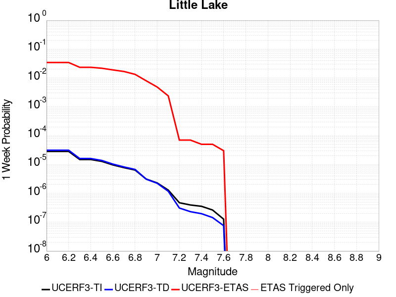 |  |  |  |
 |  |  |  |
 |  |  | 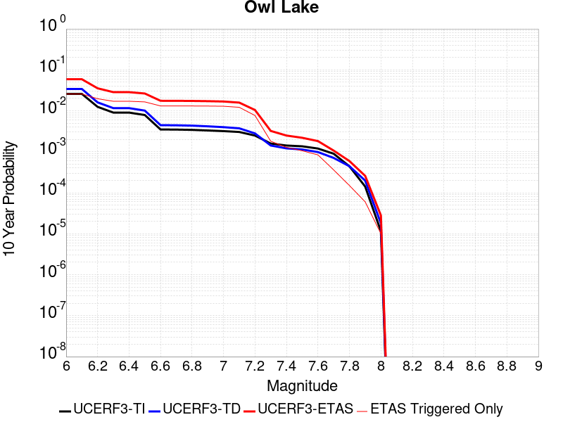 |
| Min Mag | Triggered Ruptures (no spontaneous) | Triggered Ruptures (primary aftershocks only) |
|---|---|---|
| M≥2.5 |  |  |
| M≥5 |  |  |
| M≥6 |  |  |
| M≥7 |  |  |
{
"numSimulations": 100000,
"duration": 10.0,
"startTimeMillis": 1562383194040,
"includeSpontaneous": false,
"randomSeed": 1569621567439,
"binaryOutput": true,
"binaryOutputFilters": [
{
"prefix": "results_complete",
"descendantsOnly": false
},
{
"prefix": "results_m5_preserve_chain",
"minMag": 5.0,
"preserveChainBelowMag": true,
"descendantsOnly": false
}
],
"forceRecalc": false,
"simulationName": "ComCat M7.1 (ci38457511), ShakeMap Surfaces, Log10(k)\u003d-2.52, p\u003d1.21, c\u003d0.004168694, ModMag6.53",
"numRetries": 3,
"outputDir": "/home/scec-02/kmilner/ucerf3/etas_sim/2019_09_27-ComCatM7p1_ci38457511_ShakeMapSurfaces_Log10_k_2p52_p1p21_c0p004168694_ModMag6p53",
"triggerRuptures": [
"omitted due to length, see original input file"
],
"cacheDir": "/home/scec-02/kmilner/ucerf3/ucerf3-etas-launcher/inputs/cache_fm3p1_ba",
"fssFile": "/home/scec-02/kmilner/ucerf3/ucerf3-etas-launcher/inputs/2013_05_10-ucerf3p3-production-10runs_COMPOUND_SOL_FM3_1_SpatSeisU3_MEAN_BRANCH_AVG_SOL.zip",
"probModel": "FULL_TD",
"applySubSeisForSupraNucl": true,
"totRateScaleFactor": 1.14,
"gridSeisCorr": true,
"timeIndependentERF": false,
"griddedOnly": false,
"imposeGR": false,
"includeIndirectTriggering": true,
"gridSeisDiscr": 0.1,
"catalogCompletenessModel": "RELAXED",
"etas_p": 1.21,
"etas_c": 0.004168694,
"etas_log10_k": -2.52,
"configCommand": "u3etas_comcat_event_config_builder.sh --event-id ci38457511 --num-simulations 100000 --days-before 7 --mag-complete 3.5 --etas-k -2.52 --etas-p 1.21 --etas-c 0.004168694 --name-add ModMag6.53 --finite-surf-shakemap --finite-surf-shakemap-min-mag 5 --hpc-site USC_HPC --nodes 36 --hours 24 --queue scec",
"configTime": 1569621567439,
"comcatMetadata": {
"region": {
"border": [
{
"latitude": 35.15123745324938,
"longitude": -117.46198765392752
},
{
"latitude": 35.170513097218205,
"longitude": -117.55046477274733
},
{
"latitude": 35.201997575622634,
"longitude": -117.63356287896195
},
{
"latitude": 35.24474776584818,
"longitude": -117.70878534540662
},
{
"latitude": 35.2893890362986,
"longitude": -117.76387551603122
},
{
"latitude": 35.288830898189985,
"longitude": -117.76465036296011
},
{
"latitude": 35.62116745212862,
"longitude": -118.13026990137416
},
{
"latitude": 35.621789874646055,
"longitude": -118.12940866580139
},
{
"latitude": 35.621789874646055,
"longitude": -118.12940866580136
},
{
"latitude": 35.63100857737423,
"longitude": -118.14083341711117
},
{
"latitude": 35.69213881200874,
"longitude": -118.19401186444136
},
{
"latitude": 35.759827796433385,
"longitude": -118.23338865654299
},
{
"latitude": 35.8320329014668,
"longitude": -118.25773927868946
},
{
"latitude": 35.906569563076914,
"longitude": -118.26628547708222
},
{
"latitude": 35.9811764992231,
"longitude": -118.25872343341653
},
{
"latitude": 36.05358395358725,
"longitude": -118.23523828089384
},
{
"latitude": 36.12158296055357,
"longitude": -118.19650389473806
},
{
"latitude": 36.18309350302806,
"longitude": -118.14366730262441
},
{
"latitude": 36.23622937613509,
"longitude": -118.07831757407638
},
{
"latitude": 36.279357589115186,
"longitude": -118.00243964650828
},
{
"latitude": 36.31115024550475,
"longitude": -117.91835419890715
},
{
"latitude": 36.33062704347584,
"longitude": -117.82864534929934
},
{
"latitude": 36.337186832826475,
"longitude": -117.7360785775
},
{
"latitude": 36.33062704347584,
"longitude": -117.64351180570065
},
{
"latitude": 36.31115024550475,
"longitude": -117.55380295609284
},
{
"latitude": 36.279357589115186,
"longitude": -117.46971750849171
},
{
"latitude": 36.23622937613509,
"longitude": -117.39383958092363
},
{
"latitude": 36.19237301765921,
"longitude": -117.33990236386252
},
{
"latitude": 36.19237301765921,
"longitude": -117.3399023638625
},
{
"latitude": 36.19300476664728,
"longitude": -117.33902822340912
},
{
"latitude": 35.858277657147454,
"longitude": -116.97410396317103
},
{
"latitude": 35.85771127553969,
"longitude": -116.97489025431044
},
{
"latitude": 35.849566414597014,
"longitude": -116.96491461360324
},
{
"latitude": 35.78805819220281,
"longitude": -116.9122967694479
},
{
"latitude": 35.72006106557635,
"longitude": -116.87372034968973
},
{
"latitude": 35.64765482528862,
"longitude": -116.85032807444419
},
{
"latitude": 35.57304829206068,
"longitude": -116.8427916482061
},
{
"latitude": 35.49851117585832,
"longitude": -116.8512961557198
},
{
"latitude": 35.42630481575459,
"longitude": -116.87553976530553
},
{
"latitude": 35.35861392859174,
"longitude": -116.91474809853695
},
{
"latitude": 35.29748137319737,
"longitude": -116.96770221389164
},
{
"latitude": 35.24474776584818,
"longitude": -117.03277884359336
},
{
"latitude": 35.201997575622634,
"longitude": -117.10800131003803
},
{
"latitude": 35.170513097218205,
"longitude": -117.19109941625265
},
{
"latitude": 35.15123745324938,
"longitude": -117.27957653507247
},
{
"latitude": 35.14474752487352,
"longitude": -117.3707820945
}
]
},
"eventID": "ci38457511",
"minDepth": -10.0,
"maxDepth": 24.0,
"minMag": 2.5,
"startTime": 1561778393040,
"endTime": 1562383193041,
"magComplete": 3.5
}
}